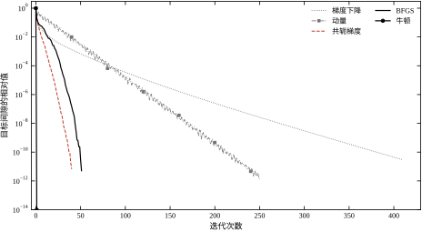
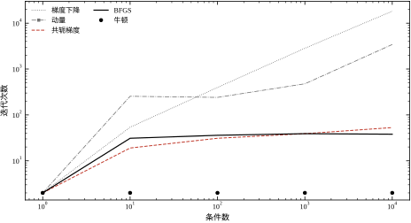
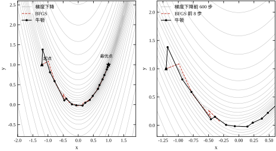
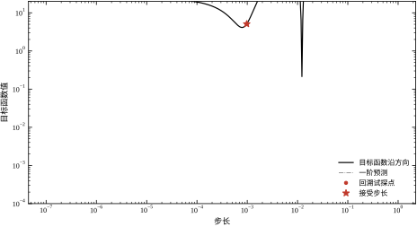
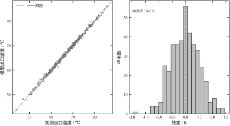
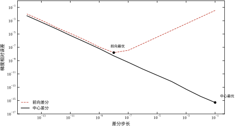

第27章实验 E 扫过学习率：取 3\times10^{-1} 时训练误差 2.620 K，是 10^{-2} 时的两倍半——步子太大，连训练集都没拟合住。第28章实验 F 更极端，同样是 0.30，最大梯度冲到 23217，训练误差 5.539 K，比直接预测均值还差，而那一节只留了一条“先把学习率除以十”的工程判据。两章都在开头许过一句“凡是涉及’为什么这个算法收敛’的问题，一律指回第29章”，但没有一处说清 0.30 究竟撞上了什么。第28章的其余实验里还有同类现象：逆模型训练用 8\times10^{-3}，图网络用 5\times10^{-3}，也没有说明为什么不能取 0.3。这些欠账，本章来还。
还账的入口是一个很小的实验。取一个条件数 100、维度 20 的正定二次型，从原点出发，步长分别取最大特征值倒数的 1.90、1.99、2.01、2.20 倍，各走 200 步。前两行都到了 -254.4 附近，与最优值 -254.7 只差零点几；2.01 倍那一行走到 +689.5，方向已经反了；2.20 倍那一行是 5.88×10³²，在双精度里等于溢出。同一个方向、同一条更新公式，步长只差百分之一，结果从收敛变成爆炸。
这三个数把问题拆成三问：为什么存在一个上界，上界是多少，越界以后坏得多快。第一问的答案藏在二次型的谱里，第二问是最大特征值倒数的两倍，第三问是指数。三问本身都不难，难的是把它们用到不是二次型的对象上——真实的损失面既不知道最大特征值，也不知道条件数，甚至不知道是不是凸的。
本章要做的，就是把这三问从“能算的模型”搬到“只能量的对象”上。搬法有三条：一是用线搜索把步长交给函数值自己决定，不再依赖未知的谱；二是用曲率信息（海森矩阵或其近似）把方向从“最陡”改成“最准”；三是用参数变换把病态的尺度问题在进入优化器之前就消掉。三条各有代价，本章会把代价算清楚。
控制工程里的人对优化并不陌生，只是常常不把它叫优化。它至少出现在三个位置。
第一个位置是辨识。 第15到22章的所有参数估计，最后都归结为一个最小二乘问题：给定输入输出数据，找一组参数使残差平方和最小。一阶惯性加纯延迟的拟合、ARX 的系数、换热器的换热系数，都是这个形式。这类问题的特点是残差对参数线性，一次求解就完；但只要对象里有一个指数、一个对数平均温差、一个饱和环节，线性就没了，必须迭代。
第二个位置是训练。 第27、28章的网络训练是最小化一个非凸的损失函数，参数量从几百到几千。反传给出了梯度，但梯度只是原料，怎么用它走路是另一回事。学习率、动量、批大小这些超参数，说到底都在回答同一个问题：这一步该迈多远。
第三个位置是稳态优化。 给定一组经济指标与约束，找使成本最低的工况点。这一层在第58、80章的模型预测控制里出现，本章不碰约束，只讲无约束的那一半。
三个位置共用一套数学，但侧重不同。辨识关心的是“解对不对”，训练关心的是“多久能到”，稳态优化关心的是“到了以后稳不稳”。本章的五个算例分别落在这三种关切上，没有一个算例是“为了展示算法好看”而设计的。
算例一是一个 50 维、条件数 100 的正定二次型，起点取原点，最优值 -549.8。选它是因为二次型上所有算法的行为都能手算核对：牛顿两步到位，共轭梯度理论上不超过 50 步，梯度下降的收敛因子由条件数唯一决定。这是本章唯一一个“标准答案已知”的算例，用来校准读者的直觉。
算例二是同一个二次型族，维度降到 30，条件数从 1 扫到 10^4，看五种算法的迭代次数怎么变。条件数 1 时所有算法都是两步——那是一个各向同性的球，怎么走都对；条件数 10^4 时差距拉开到三个数量级。这条扫描线是本章所有“该选哪个算法”结论的底座。
算例三是二维香蕉函数，起点 (-1.2,\,1.0)，最优点 (1,\,1)，最优值 0。它不凸、有一条弯曲的窄谷，梯度在谷里几乎与谷壁平行，是最经典的“梯度下降走不动”的例子。选它不是为了难为梯度下降，而是因为二维可以把轨迹画在等高线上，读者能一眼看出“方向错在哪”。
算例四是换热器的非线性最小二乘：400 段稳态样本，真值 a=2.4、T_{\text{hot}}=95 ℃，出口温度叠 0.5 K 噪声，两个待估参数，起点 a=1.2、T_{\text{hot}}=80 ℃。这是本章唯一一个“从控制工程里长出来”的算例，也是唯一一个雅可比两列量级差三十倍的算例。它的残差下界由噪声决定，约 0.5 K，任何算法都不该显著好于这个数。
算例五是一组工程量的测量：维度从 100 加到 2000 时 BFGS 与 L-BFGS 的耗时与内存；有限差分步长从 10^{-1} 扫到 10^{-14} 时梯度相对误差的形状；三种停止准则各自停在第几步、离最优点多远。这三项不影响“算法对不对”，只影响“工程上能不能用”，所以单独成组。
第一条口径：所有数字来自单次实跑，种子 20261029，单线程。理由与第27、28章相同，多线程归约的次序不固定，同一条曲线两次跑出来会在末位抖。本章的迭代次数是整数，抖动表现为“某一步刚好跨过阈值”，可能让 410 变成 409，但不会让 410 变成 300。
第二条口径：耗时只比量级，不比小数点。本章实验 F 里 BFGS 在 n=2000 上跑了 22.0 秒，L-BFGS 跑了 0.355 秒，差 62 倍；这个倍数换一台机器可能变成 40 或 90，但“几十倍”这个量级不变。凡是依赖 62 这个精确值的结论，本章都不做。
第三条口径：残差差异小于 0.05 K 不当作结论。这条门限的来历在第26章实验 D：交叉验证的划分波动使决定系数有 0.0008 的标准差，折算到误差约 0.03 K，取 0.05 K 作保守门限，第28章沿用。本章的残差多落在 0.52 到 0.58 K 之间，彼此差不到 0.05 K，因此本章比较的是迭代次数与每步代价，而不是“谁的残差更小”——后者在这个算例上没有区分度，写出来只是噪声。
两处约定。约定一，公式里的向量一律加粗，标量不加；梯度记 \nabla f，海森矩阵记 \nabla^2 f，两者都不写下标时默认在当前点上取值。约定二，温度用摄氏度，误差用开尔文，与第28章一致，避免 273.15 在推导里来回出现。
第27章讲“梯度怎么来的”：反向传播是链式法则的矩阵形式，梯度检查用中心差分，梯度消失有定量界。本章不重复这些，凡是涉及“这一层的偏导怎么算”的问题，一律指回第27章 §27.2。本章只接手梯度到手之后的事。
第28章讲“结构怎么选、怎么接进回路”。那里出现的每一个训练配置背后都有一个优化器，但那一章把优化器当成给定的更新规则。本章把那层黑箱打开：为什么 8×10⁻³ 能用、0.3 不能用，为什么 Adam 在病态问题上比朴素梯度下降稳，答案都在步长与曲率的比值里。
第44章讲 PID 与整定，第45章讲串级，第46章讲前馈加反馈，第58章讲模型预测控制，第47章讲 Smith 预估。本章不讨论控制器结构、不讨论抗饱和、不讨论无扰切换，这些属于第44到47章；本章只提供一件工具——当你在辨识、训练或稳态优化里遇到“要最小化一个函数”时，知道该用哪种下降方式、步长怎么定、什么时候该停。
第15到22章的系统辨识里，最小二乘是以“估计器”的身份出现的，重点是统计性质：无偏、有效、置信区间。本章把它当“优化问题”看，重点是数值行为：条件数、迭代次数、收敛速度。同一个算法，两种视角，本章不重复统计侧的推导。
还有两条边界。第一，本章不涉及约束优化，KKT 条件、有效集、内点法都属于后续章节；本章的所有问题都没有可行域。第二，本章不涉及随机梯度与自适应步长（Adam、RMSProp），那部分已经在第27章作为训练技巧讲过；本章只讨论全批量、确定性的一阶与二阶方法，因为只有在这一层，“收敛速度”才有严格定义。
先把量级摆出来，让读者知道这一章要证明什么。
结果一，二次型上的排序是干净的。 条件数 100、维度 50，达到梯度范数降到初值 10^{-6} 的同一标准，牛顿 2 次、共轭梯度 41 次、BFGS 52 次、动量 251 次、梯度下降 410 次。牛顿的两次不是调参调出来的，是二次函数加精确海森矩阵的必然；共轭梯度的 41 次略少于维度 50，也是理论保证的。
结果二，条件数是分化器。 条件数从 1 加到 10^4，梯度下降从 2 次涨到 18236 次，共轭梯度从 2 次涨到 53 次，牛顿始终是 2 次，BFGS 从 2 次涨到 38 次。四个数量级的条件数，对梯度下降是四个数量级的代价，对牛顿是零。 这条对比是“为什么值得算曲率”的最直接回答。
结果三，内存可以换迭代。 香蕉函数上 BFGS 用 34 步，限制内存为 10 的 L-BFGS 用 629 步。记忆换来的不是精度，是步数；而步数在低维是廉价的，在高维不是——这正是下一条的伏笔。
结果四，维度决定谁付得起。 维度 2000 时，BFGS 走 30 步要 22.0 秒、占 30.52 MB，L-BFGS 同样 30 步要 0.355 秒、占 0.305 MB。时间差 62 倍，内存差 100 倍，而两者的迭代次数在这一段完全相同，因为都被人为截断在 30 步。
结果五，换热器上二阶方法全胜。 同一个两参数最小二乘，高斯—牛顿 7 次、加回溯 5 次、列文伯格—马夸特 6 次、BFGS 27 次、换对数参数后的 BFGS 8 次；定步长梯度下降走满 20000 步仍未到，残差 0.5727 K 对 0.5235 K。两万步换不来最后那 0.05 K，这是条件数 3.4\times10^4 的直接后果。
结果六，差分步长有一个最优值。 前向差分在 h=10^{-8} 时误差最小，为 1.60\times10^{-8}；再小就反弹，h=10^{-14} 时退化到 1.02\times10^{-2}。中心差分在 h=10^{-1} 就达到机器精度 5.18\times10^{-16}，此后一路变坏。“步长越小越准”是错的，误差是截断误差与舍入误差的和，两端都坏。
六个结果对应六张图、十几张表。路线是：29.2 定义问题、条件数与收敛速度，29.3 把五种算法的更新式推出来并给出各自的收敛阶，29.4 落到实现细节（两循环递归、线搜索守卫、参数化、差分步长、停止准则），29.5 讲工程边界，29.6 用八组实验把每条论断钉在数字上，29.7 收束。
读这一章有三条路径，按目的选。 只想把手里的一段代码跑起来，直接看 29.4.1 的五个骨架、29.5.6 的适用性判别表和 29.7.4 的检查清单，其余可以跳过。要在方案评审上解释“为什么这里该用拟牛顿而不是梯度下降”，读 29.2.3 到 29.3.6，条件数与步数的关系是全部论据的来源。要判断一份报告里的收敛曲线是否可信，读 29.3.7 与 29.6，那里讲清了收敛率是对什么说的，以及曲线斜率在什么情况下会骗人。
第二件事，比较的公平性。 本章所有算法之间的对比都满足三个条件：同一初始点、同一停止判据、同一份函数与梯度实现，唯一变化的只有更新方向与步长策略。这听起来是常识，写代码时却最容易被破坏——给梯度下降配一个固定的两万步上限，却给 BFGS 配自适应回溯线搜索，那么“BFGS 步数少”就不再是算法性质，而是停止规则的差异。本章把迭代次数与每步代价分列成两栏，就是为了让读者能自己判断：哪一部分差异属于算法，哪一部分属于实现。
第三件事，读图的一个习惯。 本章的收敛图全部用半对数坐标，横轴是迭代次数，纵轴是目标间隙相对初值的比。在这种坐标下，一段直线意味着每步乘同一个因子，斜率直接给出收敛因子：斜率 -1 是每步缩到十分之一，-0.01 是每步缩到约 0.977。曲线向下弯，说明后期换进了更快的机制，通常是进入二次收敛区；向上弯，说明舍入噪声开始主导，再迭代下去没有意义。养成这个习惯，看一眼斜率就能判断算法处在哪一档。
最后统一一下称呼。本章说“五种算法”，固定指梯度下降、动量、共轭梯度、BFGS 与牛顿，它们在 29.3 各有一节推导。高斯—牛顿与列文伯格—马夸特不在其中：它们只对“残差平方和”这一类目标成立，是通用方法在最小二乘上的特化，所以放在 29.6.4 与换热器算例一起讲。读后面各表时留意这一点，五列的对照表与最小二乘的对照表不是一个集合，数字不能横向串着比。
本章只讨论一个式子：
\min_{\mathbf{x}\in\mathbb{R}^{n}}\ f(\mathbf{x}) \tag{29-1}
它没有约束、没有可行域、没有整数变量。f 假定二阶连续可微，梯度 \mathbf{g}(\mathbf{x})=\nabla f(\mathbf{x}) 与海森矩阵 \mathbf{H}(\mathbf{x})=\nabla^{2}f(\mathbf{x}) 都存在。这个假定在控制工程里几乎总是成立：残差平方和、交叉熵、对数似然都是光滑的；真正不光滑的是饱和、死区、最大值这类环节，它们要靠第44章的约束处理，不在本章范围内。
局部最优的两个条件是标准的。一阶必要条件：\mathbf{g}(\mathbf{x}^{*})=\mathbf{0}。二阶充分条件：\mathbf{g}(\mathbf{x}^{*})=\mathbf{0} 且 \mathbf{H}(\mathbf{x}^{*}) 正定。这两条只回答“到没到站”，不回答“怎么走”。本章的五种算法，本质上都是解方程 \mathbf{g}(\mathbf{x})=\mathbf{0} 的不同迭代格式：梯度下降把它当成一个不动点问题，牛顿法对它做线性化，拟牛顿法用割线近似替代雅可比。
所有一阶与二阶方法都建立在同一个二次模型上。在当前点 \mathbf{x} 处沿方向 \mathbf{d} 走一步，目标函数的二阶展开是
f(\mathbf{x}+\mathbf{d})\approx f(\mathbf{x})+\mathbf{g}^{\top}\mathbf{d}+\tfrac{1}{2}\mathbf{d}^{\top}\mathbf{H}\mathbf{d} \tag{29-2}
式 (29-2) 是本章全部推导的起点，不同的算法只是对 \mathbf{H} 做了不同的假设。梯度下降假设 \mathbf{H}=(1/\eta)\mathbf{I}，也就是认为各个方向曲率相同，于是最优方向就是 -\mathbf{g}；牛顿法用真实的 \mathbf{H}，于是方向是 -\mathbf{H}^{-1}\mathbf{g}；拟牛顿法用一个递推更新的 \mathbf{B}_k 逼近 \mathbf{H}，既不求二阶导也不解线性方程组；共轭梯度法不显式构造 \mathbf{B}_k，而是在 Krylov 子空间里逐步构造一组共轭方向。四句话概括了本章后半部分的所有内容，剩下的工作是把这四句话的代价与适用范围量化。
把式 (29-2) 的高阶项全部丢掉，就得到二次型。本章的算例一取
f(\mathbf{x})=\tfrac{1}{2}\mathbf{x}^{\top}\mathbf{A}\mathbf{x}-\mathbf{b}^{\top}\mathbf{x}, \qquad \mathbf{g}(\mathbf{x})=\mathbf{A}\mathbf{x}-\mathbf{b}, \qquad \mathbf{H}=\mathbf{A} \tag{29-3}
其中 \mathbf{A} 对称正定。它的最优点有解析解 \mathbf{x}^{*}=\mathbf{A}^{-1}\mathbf{b}，最优值 f^{*}=-\tfrac{1}{2}\mathbf{b}^{\top}\mathbf{A}^{-1}\mathbf{b}。本章的算例一里 \mathbf{A} 的特征值取对数等距，从 1 到 100，维度 50，最优值 -549.8，这个数在实验 A 的五种算法里都会出现，是核对实现是否写错的第一道关卡。
二次型上梯度下降的最优步长可以手算。把 \mathbf{x}_{k+1}=\mathbf{x}_k-\eta\mathbf{g}_k 代入式 (29-3)，沿 \mathbf{g}_k 方向对 \eta 求极小，得
\eta_{k}=\frac{\mathbf{g}_k^{\top}\mathbf{g}_k}{\mathbf{g}_k^{\top}\mathbf{A}\mathbf{g}_k}, \qquad \eta_{\max}=\frac{2}{\lambda_{\max}} \tag{29-4}
式 (29-4) 的右边那个上界，就是 §29.1.1 里“步长差百分之一”的来源。它不是经验值，是二次型的谱决定的硬边界：只要 \eta>2/\lambda_{\max}，沿最大特征值方向的误差分量每步放大 |\eta\lambda_{\max}-1|>1 倍，无论其他方向收敛得多好，这一个分量都会把整体拖向发散。实验 E 里 \eta 从 1.99/\lambda_{\max} 加到 2.01/\lambda_{\max}，200 步后从 -254.4 变成 +689.5，就是这一个分量在起作用。
最优步长式 (29-4) 还有一个性质值得记住：它使新误差在 \mathbf{A} 范数下最小。\mathbf{A} 范数定义为 \|\mathbf{e}\|_{\mathbf{A}}^{2}=\mathbf{e}^{\top}\mathbf{A}\mathbf{e}，在二次型上它等于 2(f(\mathbf{x})-f^{*})，所以“误差的能量”与“离最优值多远”是同一个量。这个等价只对二次型成立，对一般函数不成立，但它给了我们一个统一的说法：收敛曲线画的是能量，不是参数。
条件数定义为最大与最小特征值之比：
\kappa=\frac{\lambda_{\max}}{\lambda_{\min}} \tag{29-5}
它的几何意义是等高线椭球的轴长比：\kappa=100 时最长轴是最短轴的 10 倍（轴长比是 \sqrt{\kappa}），\kappa=10^{4} 时是 100 倍。梯度垂直于等高线，所以在狭长椭球上，梯度方向几乎垂直于通向最优点的方向，这就是梯度下降在病态问题上走“之”字的原因。图 29-2 会把这条几何事实变成迭代次数的曲线。
条件数不只出现在优化里，它是数值线性代数的通用病理指标。本章有三处用到它。第一处是二次型的 \kappa，直接决定梯度下降的迭代数；第二处是雅可比转置乘雅可比 \mathbf{J}^{\top}\mathbf{J} 的条件数，它决定最小二乘问题的病态程度，换热器算例在起点是 3.44\times10^{4}，在解处是 5.20\times10^{3}；第三处是参数化之后的条件数：把 a 换成 \ln a、把 T_{\text{hot}} 平移后取对数，同一个问题的条件数会变，BFGS 的迭代数从 27 降到 8。这三处不是三个问题，而是同一个量在三个层面上的表现，所以本章反复回到它。
换热器的病态有一个具体的物理来源。雅可比的两列分别是 \partial r/\partial a 与 \partial r/\partial T_{\text{hot}}，在起点处它们的范数是 194.4 与 6.71，差 29 倍。第一列大是因为 a 乘在指数上，一点点变化就能推动出口温度；第二列小是因为 T_{\text{hot}} 只通过 1-e^{-au/q} 这个小于 1 的因子起作用。两列量级差三十倍，\mathbf{J}^{\top}\mathbf{J} 的条件数就上到 10^{4} 量级，这不是数据噪声造成的，是模型结构决定的。
这里有一个最常见的误读需要澄清。等高线的形状由 \sqrt{\kappa} 决定，而梯度下降的步数由 \kappa 决定，两者差一个平方。 \kappa=10^{4} 的椭球看上去只是 100:1 的细长，让人觉得“不太好但也没多坏”；可梯度下降要走的是 10^{4} 量级的步数。把这两个数混起来，就会低估病态的严重程度。
这个区别在判断“要不要换算法”时很有用。看到 \mathbf{J}^{\top}\mathbf{J} 的条件数是 10^{4}，第一反应应该是“图上会看到一个 100:1 的椭圆”，第二反应才是“只用一阶信息的算法要付 10^{4} 量级的步数”。换热器算例上这两件事都能看到：梯度下降走满两万步仍未收敛，高斯—牛顿七步就到。差别不在谁更努力，而在后者一次把长轴量了出来，前者只能沿长轴一格一格爬。
迭代法的好坏要用“误差怎么变小”来度量。设 \mathbf{e}_k=\mathbf{x}_k-\mathbf{x}^{*}，线性、超线性、二次收敛的定义依次是
\|\mathbf{e}_{k+1}\|\le \rho\,\|\mathbf{e}_k\|, \qquad \lim_{k\to\infty}\frac{\|\mathbf{e}_{k+1}\|}{\|\mathbf{e}_k\|}=0, \qquad \|\mathbf{e}_{k+1}\|\le C\,\|\mathbf{e}_k\|^{2} \tag{29-6}
式 (29-6) 的三条从左到右依次对应线性、超线性、二次收敛，要求一条比一条强。
线性收敛的 \rho 是每步的误差折扣。\rho=0.98 意味着每步只掉百分之二，要把误差降六个数量级需要 \ln 10^{-6}/\ln 0.98\approx 687 步；\rho=0.5 只需要 20 步。这就是为什么“每步只差一点点”的算法在工程上不可用：单步便宜不能抵消步数爆炸。
二次收敛的含意更极端：误差从 10^{-1} 到 10^{-2} 要一步，从 10^{-2} 到 10^{-4} 要一步，从 10^{-4} 到 10^{-8} 还只要一步。有效数字每步翻倍。牛顿法在最优解邻域内有这个性质，但只在邻域内；离得远时它可能根本不下降，所以必须有线搜索或信赖域把全局行为拉回来。
本章的三个数字正好对应三档。牛顿 2 步（二次收敛，二次型上一步到位后第二步确认）、BFGS 52 步（超线性）、梯度下降 410 步（线性，\rho 接近 0.96）。注意这三个数字不能直接比较“谁更聪明”：牛顿每步要解一个 50\times50 的线性方程组，梯度下降每步只做一次矩阵向量乘，单步代价差两个数量级。公平的比较要乘上每步代价，这件事在 §29.5 展开。
只看迭代次数会得出错误结论。本章用四个指标一起评价，缺一不可。
指标一，每步代价。 梯度下降每步一次梯度计算，复杂度 O(n)；BFGS 每步除了梯度还要更新一个 n\times n 矩阵，复杂度 O(n^{2})；牛顿每步要解线性方程组，复杂度 O(n^{3})。这个差别在 n=2000 时是 30 步 22 秒对 30 步 0.36 秒，实验 F 会给出完整数据。
指标二，迭代次数。 它由条件数与算法阶数共同决定，与维度弱相关。实验 B 里条件数从 1 到 10^{4}，牛顿恒为 2 次，梯度下降从 2 次涨到 18236 次。
指标三，内存。 牛顿与 BFGS 都要存 n\times n 矩阵，n=2000 时是 30.52 MB；L-BFGS 只存最近 m 对位移与梯度差，m=10 时是 0.305 MB。差 100 倍，这是“能不能在嵌入式控制器上跑”的分水岭。
指标四，鲁棒性。 对初值、对参数尺度、对噪声、对梯度近似误差的敏感程度。这一项最难量化，本章用三个代理指标：不同起点下的迭代数（实验 D 的四个起点）、不同参数化下的迭代数（原参数 27 次对对数参数 8 次）、以及线搜索的回溯次数（BFGS 平均 1.1 次每步）。
把四个指标压成一张表，就是表 29-1。
表 29-1 五种算法在二次型上的四项指标（n=50，\kappa=100）
| 算法 | 每步代价 | 迭代次数 | 内存 | 主要弱点 |
|---|---|---|---|---|
| 梯度下降 | 一次梯度，O(n) | 410 | O(n) | 条件数一差就走不动 |
| 动量 | 一次梯度，O(n) | 251 | O(n) | 动量系数要试，过大振荡 |
| 共轭梯度 | 一次梯度加一次矩阵乘 | 41 | O(n) | 非二次问题上需重启 |
| BFGS | 一次梯度加 O(n^{2}) 更新 | 52 | O(n^{2}) | 内存随维度平方增长 |
| 牛顿 | 一次梯度加一次求解 O(n^{3}) | 2 | O(n^{2}) | 海森矩阵不一定可得 |
表 29-1 的读法是纵向比代价、横向比收益。梯度下降与牛顿的迭代数差 205 倍，单步代价在 n=50 时差约 50 倍，两头相抵，牛顿仍快四倍；但当 n 涨到 2000，单步代价差到 10^{3} 倍以上，这个账就翻过来了。表里“主要弱点”一列是选型的真正依据：没有一种算法在所有维度、所有条件数、所有内存预算下都占优，这就是本章要讲清楚的事。
五个算例里只有换热器不是二次型，但它的写法与其他最小二乘完全一样。设残差向量 \mathbf{r}(\mathbf{p})\in\mathbb{R}^{m}，目标函数与导数为
F(\mathbf{p})=\tfrac{1}{2}\|\mathbf{r}(\mathbf{p})\|^{2}, \qquad \nabla F=\mathbf{J}^{\top}\mathbf{r}, \qquad \nabla^{2}F=\mathbf{J}^{\top}\mathbf{J}+\sum_{i=1}^{m}r_{i}\nabla^{2}r_{i} \tag{29-7}
其中 \mathbf{J}=\partial\mathbf{r}/\partial\mathbf{p} 是雅可比。式 (29-7) 的第三项是本章一个关键的分水岭：高斯—牛顿直接丢掉 \sum r_i\nabla^{2}r_i，只用 \mathbf{J}^{\top}\mathbf{J}；列文伯格—马夸特在这个近似上加阻尼；BFGS 则完全不碰二阶项，靠梯度差构造近似。三种做法在换热器算例上的迭代数是 7、6、27，差别就来自这里。
丢掉第二项在什么条件下合理？当残差很小时——最小二乘在最优解附近残差趋于噪声，r_i 是 0.5 K 量级，而 \mathbf{J}^{\top}\mathbf{J} 的元素是 10^{3} 量级，第二项可以忽略。当残差很大时不能丢：本章实验 D 的起点残差是 17.4 K，此时 \sum r_i\nabla^{2}r_i 与 \mathbf{J}^{\top}\mathbf{J} 同量级，高斯—牛顿的二次模型严重失真，这也解释了为什么它从起点出发要 7 步而不是 2 步。
最后把记号一次列清。表 29-2 是本章符号表，后文不再重复定义。
表 29-2 本章记号
| 记号 | 含义 | 本章取值 |
|---|---|---|
| \mathbf{x} | 优化变量 | 二次型 n=20 到 2000 |
| f | 目标函数 | 二次型、香蕉函数、残差平方和 |
| \mathbf{g} | 梯度 \nabla f | 与 \mathbf{x} 同维 |
| \mathbf{H} | 海森矩阵 \nabla^{2}f | n\times n 对称 |
| \kappa | 条件数 \lambda_{\max}/\lambda_{\min} | 1 到 10^{4} |
| \eta | 步长 | 以 1/\lambda_{\max} 为单位 |
| \mathbf{d}_k | 第 k 步的搜索方向 | 下降方向，\mathbf{g}^{\top}\mathbf{d}<0 |
| \alpha | 线搜索得到的步长系数 | 回溯折半，初值 1 |
| \mathbf{s}_k,\ \mathbf{y}_k | 位移与梯度差 | \mathbf{s}=\mathbf{x}_{k+1}-\mathbf{x}_k，\mathbf{y}=\mathbf{g}_{k+1}-\mathbf{g}_k |
| \mathbf{B}_k | 海森的近似 | BFGS 递推，初值单位阵 |
| \mathbf{J} | 残差雅可比 | 400\times 2（换热器） |
| \mu | 列文伯格—马夸特阻尼 | 10^{-3} 起，按四倍增减 |
| h | 差分步长 | 10^{-14} 到 10^{-1} |
表 29-2 里有两个容易混的符号：\eta 与 \alpha。\eta 是固定步长算法的步长，\alpha 是线搜索在给定方向上折半得到的系数，前者是算法参数，后者是每步算出来的。后文凡写“步长”而未加限定，一律指 \eta；凡写“回溯”“接受步长”，一律指 \alpha。这个区分在 §29.4 讲线搜索时尤其重要，因为两者的失效机制完全不同：\eta 过大是整体发散，\alpha 过小是原地踏步。
本章所有算法停下来的标志都是 \mathbf{g}=0，但这个条件本身什么也没保证。一阶必要条件说“极小点必然满足它”，反过来不成立：\mathbf{g}=0 可能对应局部极小、局部极大、或鞍点，三者在梯度这一层完全无法分辨，要靠 \mathbf{H} 的特征值。
\mathbf{H} 正定是极小，负定是极大，有正有负是鞍点，半正定则要看高阶项。本章的五个算例里，二次型的 \mathbf{H}=\mathbf{A} 正定、处处只有一个极小；香蕉函数的 \mathbf{H} 在最优点正定，但整张曲面上存在 \mathbf{H} 不定甚至负定的区域，牛顿法在那些点的方向可能是上升方向（这就是 §29.4.1 里“方向不下降就退回最速下降”那行代码存在的原因）；换热器的 \mathbf{H}\approx\mathbf{J}^{\top}\mathbf{J} 在残差不为零处只是半正定，它的零空间对应“数据上不可分辨的参数组合”。
工程上的后果是：停下来了不等于找对了。 高维非凸问题里鞍点的数量随维度指数增长，梯度为零的点中极小点反而是少数。判别办法不是在原空间里猜——那需要 n 个特征值——而是从那个点出发加一个小扰动再跑几十步：还在原地说明是极小，走掉了说明是鞍点。这个办法不严格，但它只需要几十次迭代，比算特征值便宜得多。本章的算例都不涉及这件事，因为二次型只有一个极小、香蕉函数从给定起点能走到唯一极小、换热器只有一个吸引域；写在这里是为了提醒读者，本章所有“收敛”的结论都以“算例足够良态”为前提。
梯度下降的更新只有一行：
\mathbf{x}_{k+1}=\mathbf{x}_{k}-\eta\,\mathbf{g}_{k} \tag{29-8}
把它代进二次型，误差的递推是 \mathbf{e}_{k+1}=(\mathbf{I}-\eta\mathbf{A})\mathbf{e}_{k}。在 \mathbf{A} 的特征基下展开，第 i 个分量每步乘以 1-\eta\lambda_{i}。于是整个算法的行为被 n 个标量完全决定：每个方向独立地按自己的速率衰减，步长必须对所有方向同时合适。
要让所有分量都不放大，必须 \eta<2/\lambda_{\max}，这就是式 (29-4) 的上界。在这个范围内，让最慢的分量最快，步长取
\eta_{\star}=\frac{2}{\lambda_{\max}+\lambda_{\min}}, \qquad \rho=\frac{\kappa-1}{\kappa+1} \tag{29-9}
式 (29-9) 的 \rho 是每一步在 \mathbf{A} 范数下的最坏收缩因子。\kappa=100 时 \rho=0.9802，\kappa=10^{4} 时 \rho=0.9998。要把梯度范数降到初值的 10^{-6}，所需步数约为
N\approx\frac{\kappa}{2}\ln\frac{1}{\varepsilon} \tag{29-10}
式 (29-10) 把“条件数”翻译成了“步数”：\kappa=100、\varepsilon=10^{-6} 时是 691 步，\kappa=10^{4} 时是 69100 步。步数与条件数成正比，这就是梯度下降在病态问题上不可用的全部原因，与实现好坏、调参技巧都无关。
式 (29-10) 是一个上界，实测会小一些。表 29-3 把理论值与实验 B 的实测值并排放。
表 29-3 条件数、梯度下降迭代数的理论上界与实测（\varepsilon=10^{-6}，n=30）
| 条件数 | 式 (29-10) 的上界 | 实测（最优步长） | 实测与上界之比 |
|---|---|---|---|
| 1 | 7 | 2 | 0.29 |
| 10 | 69 | 54 | 0.78 |
| 100 | 691 | 397 | 0.57 |
| 1000 | 6908 | 2840 | 0.41 |
| 10000 | 69080 | 18236 | 0.26 |
表 29-3 的比值一列从 0.29 降到 0.26，始终小于 1。原因是式 (29-9) 与式 (29-10) 假设最坏谱——只有两个特征值，一个取 \lambda_{\min}、一个取 \lambda_{\max}。本章的二次型特征值是对数等距铺开的，绝大多数落在中间，最慢的那个分量只占一维，所以实测比上界快。这提醒一件事：理论界是给最坏情况的，套到具体问题上要么偏保守，要么根本不该用——判断依据是谱的形状，不是条件数一个数。
牛顿法用真实的曲率定方向：
\mathbf{d}_{k}=-\left[\mathbf{H}(\mathbf{x}_{k})\right]^{-1}\mathbf{g}_{k} \tag{29-11}
把它代进二次型的展开，可以直接算出下一步落在哪。设 \mathbf{x}_0 任意，则
\mathbf{x}_{1}=\mathbf{x}_{0}-\mathbf{A}^{-1}\left(\mathbf{A}\mathbf{x}_{0}-\mathbf{b}\right)=\mathbf{A}^{-1}\mathbf{b}=\mathbf{x}^{*} \tag{29-12}
一次更新就到最优点，这就是二次终止性，前提是目标函数为二次型且海森矩阵取真值 \mathbf{A}。
实验 A 报告牛顿“2 次”，其中真正的更新只有 1 次，第二次是循环在顶端检查梯度已达标后退出。这个记账方式在读表时要留意，否则会误以为牛顿需要两步。
二次终止性只对二次型成立。对一般函数，牛顿法在最优解邻域内是二次收敛的，有
\|\mathbf{e}_{k+1}\|\le L\,\|\mathbf{H}^{-1}\|\,\|\mathbf{e}_{k}\|^{2} \tag{29-13}
其中 L 是三阶导数的界。式 (29-13) 说明两件事：收敛速度是平方的，但前提是 \mathbf{H} 可逆且 \|\mathbf{e}_k\| 已经足够小。远离最优解时，\mathbf{H} 可能不定，此时 -\mathbf{H}^{-1}\mathbf{g} 甚至不是下降方向，必须加保护——本章的做法是：若 \mathbf{g}^{\top}\mathbf{d}\ge 0，退回最速下降方向，再叠加 Armijo 回溯。
牛顿法还有一个常被忽略的优点：仿射不变性。把变量换成 \mathbf{x}=\mathbf{T}\mathbf{z}，二次型变成 \mathbf{T}^{\top}\mathbf{A}\mathbf{T}，牛顿方向随之变换，迭代点序列在变换前后一一对应，步数完全不变；梯度下降做不到这一点，因为它的行为依赖 \mathbf{A} 的谱，而换变量会改变谱。工程上的含意很直接：用牛顿法时不必费心给参数选单位，用梯度下降时必须。这条性质在 §29.4.4 会以对数参数化的形式再出现一次。
代价也是三条，一条比一条硬。第一，组装 \mathbf{H} 要 n(n+1)/2 个二阶偏导，解析式未必写得出来，差分近似则要 n^{2} 次函数求值。第二，解线性方程组是 O(n^{3})，n=2000 时一次分解约 2.7\times10^{9} 次浮点运算，而梯度下降的整步只有 2000 次。第三，\mathbf{H} 不一定正定，不定的海森矩阵给出的方向可能上升，必须加保护。三条合起来，就是拟牛顿法存在的位置：用 O(n^{2}) 的更新去近似那个 O(n^{3}) 才拿得到的 \mathbf{H}，牺牲一点收敛阶，换回可承受的每步代价。
拟牛顿法放弃精确曲率，改用梯度差构造近似：不去求那 n^{2} 个二阶导，也不解 n^{3} 的方程组，只要求近似矩阵满足割线条件：
\mathbf{B}_{k+1}\,\mathbf{s}_{k}=\mathbf{y}_{k}, \qquad \mathbf{s}_{k}=\mathbf{x}_{k+1}-\mathbf{x}_{k}, \qquad \mathbf{y}_{k}=\mathbf{g}_{k+1}-\mathbf{g}_{k} \tag{29-14}
式 (29-14) 只给了一个方程，却要定一个 n\times n 矩阵，因此解不唯一。不同的补充条件给出不同的算法，BFGS 选的是“在满足割线的矩阵里，离上一步最近”。它的逆矩阵更新是
\mathbf{H}_{k+1}=\left(\mathbf{I}-\rho_{k}\mathbf{s}_{k}\mathbf{y}_{k}^{\top}\right)\mathbf{H}_{k}\left(\mathbf{I}-\rho_{k}\mathbf{y}_{k}\mathbf{s}_{k}^{\top}\right)+\rho_{k}\mathbf{s}_{k}\mathbf{s}_{k}^{\top}, \qquad \rho_{k}=\frac{1}{\mathbf{y}_{k}^{\top}\mathbf{s}_{k}} \tag{29-15}
式 (29-15) 直接更新逆矩阵，于是每步只需要一次矩阵向量乘，不必解方程组。这是 BFGS 比牛顿便宜的关键：代价从 O(n^{3}) 降到 O(n^{2})，代价是近似曲率不如真曲率准，收敛从二次退到超线性。
BFGS 的正定性有一个干净的条件：只要 \mathbf{y}_{k}^{\top}\mathbf{s}_{k}>0，更新后的 \mathbf{H}_{k+1} 保持正定，方向必为下降方向。这个条件不是自动满足的，它要靠线搜索保证——Wolfe 条件的第二条就是为此设的。本章的实现里还加了一道保险：若 \mathbf{s}^{\top}\mathbf{y}\le 10^{-12}，跳过本次更新，矩阵保持原样；若方向不下降，直接把矩阵重置为单位阵。这两行保险在没有它们的时候会导致什么，见 §29.7 的错误表。
L-BFGS 把记忆截断到最近 m 对 (\mathbf{s},\mathbf{y})，用两循环递归算 \mathbf{H}\mathbf{g}，不显式存矩阵。m=10 时内存是 2mn 个数，n=2000 时 0.305 MB，而完整 BFGS 要 30.52 MB。两个数量级的内存差，换来的是香蕉函数上 629 步对 34 步——第十八倍的步数。这笔交易值不值，取决于维度，§29.5 会给判据。
共轭梯度法走另一条路：不近似 \mathbf{H}，而是在 Krylov 子空间 \{\mathbf{r}_0,\mathbf{A}\mathbf{r}_0,\mathbf{A}^{2}\mathbf{r}_0,\dots\} 里逐步构造一组 \mathbf{A} 共轭的方向，即 \mathbf{p}_i^{\top}\mathbf{A}\mathbf{p}_j=0\ (i\ne j)。更新式是
\alpha_{k}=\frac{\mathbf{r}_{k}^{\top}\mathbf{r}_{k}}{\mathbf{p}_{k}^{\top}\mathbf{A}\mathbf{p}_{k}}, \qquad \mathbf{x}_{k+1}=\mathbf{x}_{k}+\alpha_{k}\mathbf{p}_{k}, \qquad \beta_{k}=\frac{\mathbf{r}_{k+1}^{\top}\mathbf{r}_{k+1}}{\mathbf{r}_{k}^{\top}\mathbf{r}_{k}}, \qquad \mathbf{p}_{k+1}=\mathbf{r}_{k+1}+\beta_{k}\mathbf{p}_{k} \tag{29-16}
式 (29-16) 每步只需要一次矩阵向量乘，内存 O(n)，却具有“n 步终止”的性质：精确算术下，n 维二次型最多 n 步到达最优点。实验 A 里 n=50、\kappa=100，共轭梯度用了 41 步，比维度还少，因为起点到最优点的误差在 Krylov 子空间里只占 41 维。
“n 步终止”在浮点运算里会失效。实验 B 里 \kappa=10^{4}、n=30，共轭梯度用了 53 步，超过了维度。原因不是理论错了，而是舍入误差破坏了共轭性，旧的搜索方向重新混进来，算法在原地打转。工程上的对策是重启：每 n 步把方向重置为当前残差，或者当 \mathbf{p}^{\top}\mathbf{r} 明显变负时强制重启。本章的实现没有加重启，因此 53 这个数应当读成“病态时共轭性丢失的代价”，而不是“共轭梯度比维度还慢”。
共轭梯度的收敛速度介于梯度下降与拟牛顿之间，步数大致按 \sqrt{\kappa} 增长而不是 \kappa。这个平方根是它最有价值的地方：同样是条件数从 100 涨到 10^{4}，梯度下降实测涨了 46 倍（397 步到 18236 步），共轭梯度只涨 1.7 倍（31 步到 53 步）。实测比 \sqrt{\kappa} 的预期还好，原因有两个——谱是对数等距而非最坏两点分布，且 n=30 的上限先到了。
前面四节的步长都是事先定好的。真实问题里 \lambda_{\max} 不知道，定步长要么太小（走不动）要么太大（发散），所以工业实现几乎都用线搜索：给定下降方向 \mathbf{d}_k，找一个 \alpha 使函数值确实下降。最常用的判据是 Armijo 条件：
f(\mathbf{x}_{k}+\alpha\mathbf{d}_{k})\le f(\mathbf{x}_{k})+c_{1}\alpha\,\mathbf{g}_{k}^{\top}\mathbf{d}_{k}, \qquad c_{1}=10^{-4} \tag{29-17}
式 (29-17) 的右边是一条过当前点、斜率被 c_{1} 压小的直线。要求函数值落在这条线下方，等于要求“实际下降不少于预期下降的一小部分”。c_{1} 取 10^{-4} 而不是 1，是给曲率留余地：目标函数在 \alpha 小时近似线性，c_{1}=1 会把所有 O(\alpha^{2}) 的弯曲都判为不合格，导致步长被压得过小。
Armijo 单独用有一个漏洞：它只保证下降，不保证走得够远，可能接受一个极小的 \alpha，算法退化成爬行。补上曲率条件就是 Wolfe 条件：
\mathbf{g}(\mathbf{x}_{k}+\alpha\mathbf{d}_{k})^{\top}\mathbf{d}_{k}\ge c_{2}\,\mathbf{g}_{k}^{\top}\mathbf{d}_{k}, \qquad c_{2}=0.9 \tag{29-18}
式 (29-18) 要求新点的方向导数不要比原点“负得太多”，即不要一步跨过谷底太远。Armijo 管“别上升”，Wolfe 管“别太短”，两条合起来才能保证 BFGS 的曲率条件 \mathbf{y}^{\top}\mathbf{s}>0 成立。
本章的实现只用 Armijo 加回溯（\rho=0.5，最多 60 次），配 BFGS 使用时靠“\mathbf{s}^{\top}\mathbf{y}\le 10^{-12} 就跳过更新”兜底。代价可以量：香蕉函数上 BFGS 共 33 次线搜索调用、19 次回溯，平均每步 0.58 次；牛顿 20 次调用、7 次回溯，平均 0.35 次；L-BFGS 因为方向更保守，628 次调用只有 53 次回溯，平均 0.08 次。回溯次数是方向质量的间接指标：方向越接近牛顿方向，第一步就越容易被接受。
线搜索还有一个实现细节必须写进代码：判据要显式检查有限性。若目标函数在该步上溢出成无穷大，比较式恒为真，回溯会继续；但若溢出成非数（nan），任何比较都返回假，判据会被误判为“已满足”，于是算法接受一个把参数送进 nan 的步长。本章第一版实现就栽在这里：换热器算例的雅可比符号写反，高斯—牛顿把 a 推成负数，指数溢出，Armijo 判据却报告“已满足”，残差直接变成 nan。 修法只有一行：if np.isfinite(fv) and fv <= ...。
把前五节的结论压成一张表。表 29-4 只写理论性质，实测数字在 §29.6。
表 29-4 五种算法的收敛性质（理论）
| 算法 | 局部收敛阶 | 每步主要运算 | 是否需海森 | 步数对条件数的依赖 |
|---|---|---|---|---|
| 梯度下降 | 线性，\rho=(\kappa-1)/(\kappa+1) | 一次梯度 | 否 | 正比于 \kappa |
| 动量 | 线性，\rho 由动量系数与 \kappa 共同决定 | 一次梯度 | 否 | 介于 \kappa 与 \sqrt{\kappa} 之间 |
| 共轭梯度 | 二次型 n 步终止；一般超线性 | 一次矩阵向量乘 | 否 | 约正比于 \sqrt{\kappa} |
| BFGS | 超线性 | 一次梯度加 O(n^{2}) 更新 | 否 | 弱 |
| 牛顿 | 二次 | 一次梯度加 O(n^{3}) 求解 | 是 | 无 |
表 29-4 的第二列有一个陷阱。“局部”两个字意味着这些阶只在最优解邻域内成立，离得远时五种算法都可能不收敛；本章所有实现都配了线搜索或步长上界，正是为了把远处那一截兜住。第三列与第五列是要一起读的：牛顿用 O(n^{3}) 的每步代价买来了对条件数的完全免疫，共轭梯度用 O(n) 的内存买来了 \sqrt{\kappa}，梯度下降什么都不用买，于是只能付 \kappa。三句话就是本章的选型依据，剩下的工作是把“\kappa 有多大、n 有多大、内存有多少”这三个数测出来。
动量这一行要单独说一句，因为它的性质最容易被误解。理论上，取最优动量系数 \beta^{\star}=\left[(\sqrt{\kappa}-1)/(\sqrt{\kappa}+1)\right]^{2} 时，动量法可以把步数依赖从 \kappa 降到 \sqrt{\kappa}；但 \beta^{\star} 依赖 \kappa，而 \kappa 事先不知道。本章固定取 \beta=0.9，于是只在病态时受益：\kappa=10^{4} 时 3430 步对梯度下降的 18236 步，快 5.3 倍；\kappa=10 时 255 步对 54 步，反而慢 4.7 倍。原因是 \kappa=10 对应的最优系数只有 0.27，0.9 比它大两倍多。这个反例在 §29.6.2 会展开——“动量总是加速”是一个流传很广的错误结论。
前面反复用“线性”“二次”描述收敛速度，但这三个字必须绑在一个度量上才有意义。同一个算法，对误差 \|\mathbf{x}_{k}-\mathbf{x}^{\star}\| 是线性收敛，对目标间隙 f_{k}-f^{\star} 就是线性但因子变成平方，对梯度范数 \|\mathbf{g}_{k}\| 又是另一个因子。换度量就换数，不换性质。
二次型上这三者的关系是干净的。误差与梯度由 \mathbf{g}=\mathbf{H}\mathbf{e} 联系，范数之间差一个 \lambda 的因子；目标间隙是 \frac{1}{2}\mathbf{e}^{\top}\mathbf{H}\mathbf{e}，是误差的二次型，所以 \sqrt{f_{k}-f^{\star}} 与 \|\mathbf{e}_{k}\| 同阶。于是在二次型上，“误差缩到 10^{-6}”与“梯度缩到 10^{-6}”与“间隙缩到 10^{-12}”是同一件事的三种说法，§29.6 里几个实验的停止条件都写成梯度范数，原因就在这里。
一般问题上这个等价关系会断掉。目标函数在平坦区里误差很小但梯度不小，在陡峭方向梯度很大但间隙很小，两者不再同步——这正是表 29-16 里三种判据给出三个答案的根本原因，也是 §29.5.5 要求同时看梯度与参数的原因。判断收敛时先问一句“我这个判据度量的是什么”，比问“阈值取多少”重要得多。
二次收敛的实用含义也值得摆出来。误差每步从 10^{-2} 到 10^{-4} 到 10^{-8}，有效数字位数每步翻倍，三步就吃完了双精度；线性收敛因子 0.98 则是每步只缩百分之二，要走到 10^{-6} 需要将近七百步（§29.6.1 的 410 步与这个估计同量级）。“二次收敛”与“线性收敛”的差别不是快几倍，是差几个数量级的步数，这也是为什么值得为曲率信息付出 O(n^{3}) 的代价——只要 n 不大。
本章的五个算法都在同一个脚本里实现，共用同一组停止判据与同一条线搜索。骨架按更新式写成，读者可以逐行对照式 (29-8) 到式 (29-16)。
梯度下降。 每步算梯度，按式 (29-8) 更新；步长有三种取法：最优步长 \mathbf{g}^{\top}\mathbf{g}/\mathbf{g}^{\top}\mathbf{A}\mathbf{g}、固定 1/\lambda_{\max}、任意常数。最优步长只对二次型成立，它的作用是给其他算法提供一个“不受步长选择干扰”的对照组。动量版多存一个速度向量 \mathbf{v}，更新改为 \mathbf{v}\leftarrow\beta\mathbf{v}+\eta\mathbf{g}、\mathbf{x}\leftarrow\mathbf{x}-\mathbf{v}。
共轭梯度。 从残差起步，每步一次矩阵向量乘，按式 (29-16) 更新。实现里没有加重启，这一点在 §29.3.4 已经说明后果：\kappa=10^{4} 时用 53 步，超过维度 30。
BFGS。 从单位阵起步，每步先算方向 -\mathbf{H}\mathbf{g}，做线搜索，再用式 (29-15) 更新逆矩阵。两处保险：\mathbf{s}^{\top}\mathbf{y}\le10^{-12} 时跳过更新；方向不下降时把矩阵重置为单位阵。这两行不是可选的，去掉以后在香蕉函数的某些起点上方向会变成上升方向，线搜索回溯到 2^{-60} 仍在“下降”，实际是原地不动。
牛顿。 每步组装海森矩阵、解线性方程组。求解失败（矩阵奇异）或方向不下降时退回最速下降。这个退回分支在二次型上一次都不会触发，但在香蕉函数的第一个起点上就可能触发：那里 x_1=-1.2，海森矩阵的行列式接近零。
列文伯格—马夸特。 它是唯一带内循环的算法：外层一次迭代里可能试多次阻尼，直到步长使目标函数下降。内循环最多试到 \mu>10^{10}，此时阻尼项压过曲率项，步长趋于零，外层自然停住。
五个算法共用一个停止判据：\|\mathbf{g}\|\le10^{-6}\|\mathbf{g}_{0}\|，最大迭代数各不相同（梯度下降 2\times10^{5}、共轭梯度 5000、BFGS 5000、牛顿 200）。最大迭代数不是收敛判据，是防死循环的保险：实验 D 里梯度下降走满 20000 步仍未达标，报告的是“达迭代上限”，不是“收敛”。
这三个上限的差别不是随手定的，它们按“单步代价的倒数”给。梯度下降每步 O(n)，最便宜，所以给两万步；共轭梯度每步多一次矩阵乘，给五千；牛顿每步解一个方程组，给两百步——两百步牛顿在任何问题上都远远够用，给多了只是留个保险。按这个逻辑推下去，L-BFGS 的上限应该介于共轭梯度与牛顿之间，本章沿用 BFGS 的五千。“预算”与“判据”必须分开报，是因为下游要区分两种结束：一种是“到最优了”，一种是“钱花完了”。把后者当成前者，是优化代码里最常见的错误报告方式。
L-BFGS 的关键是：不构造 \mathbf{H}，直接算 \mathbf{H}\mathbf{g}，用最近 m 对位移与梯度差做两次递推。
\mathbf{q}\leftarrow\mathbf{g},\quad \alpha_{i}=\rho_{i}\mathbf{s}_{i}^{\top}\mathbf{q},\quad \mathbf{q}\leftarrow\mathbf{q}-\alpha_{i}\mathbf{y}_{i}\ (i=k-1,\dots,k-m); \quad \mathbf{r}=\gamma\mathbf{q},\quad \beta=\rho_{i}\mathbf{y}_{i}^{\top}\mathbf{r},\quad \mathbf{r}\leftarrow\mathbf{r}+\mathbf{s}_{i}(\alpha_{i}-\beta); \quad \mathbf{d}=-\mathbf{r} \tag{29-19}
式 (29-19) 里 \gamma=\mathbf{s}_{k-1}^{\top}\mathbf{s}_{k-1}/(\mathbf{y}_{k-1}^{\top}\mathbf{s}_{k-1}) 是一个标量缩放，\rho_i=1/(\mathbf{y}_i^{\top}\mathbf{s}_i)。整个递推只用点积与向量加法，没有矩阵，所以每步代价是 O(mn)，内存是 2mn 个数。
m 的取法有一个经验区间。取太小，曲率信息不够，方向接近最速下降，步数暴涨；取太大，每步代价线性上升，且旧信息对当前点的参考价值下降。本章取 m=10，在香蕉函数上得到 629 步，完整 BFGS 是 34 步。十八倍的步数换两个数量级的内存，这笔账在 n=2000 时是划算的：完整 BFGS 的内存是 30.52 MB，L-BFGS 是 0.305 MB，而 30 步的耗时是 22.0 秒对 0.355 秒。注意这里的对比被人为截断在 30 步，两者的迭代数相同，差别纯粹来自每步代价。
线搜索的实现只有十来行，但有三处细节决定它能不能用在真实问题上。
第一处，初值取 1。 对牛顿方向与拟牛顿方向，\alpha=1 是“完整走一步”的意思，绝大多数情况下第一步就能被接受；梯度下降方向则常常需要回溯。本章的实测印证了这一点：牛顿平均回溯 0.35 次，BFGS 0.58 次，L-BFGS 0.08 次。
第二处，回溯有上限。 \alpha 每轮折半，60 轮后是 2^{-60}\approx8.7\times10^{-19}，在这个尺度上任何有限精度的函数值比较都失去意义。上限的作用是让算法在“找不到可接受步长”时停下来并报告失败，而不是无限折半。本章的实现里，若回溯到上限仍未满足判据，就直接接受最后一个值——这会带来一步无效迭代，但不会死循环。
第三处，判据检查有限性。 这一条在 §29.3.5 已经说过，这里补一句工程上的观察：溢出成 inf 与溢出成 nan 的表现完全不同。inf 会让回溯继续，算法“知道”这一步不行；nan 会让所有比较返回假，算法“以为”这一步很好。前者是可恢复的，后者是静默的灾难。任何在指数、对数、除法上做优化的代码，都必须显式处理 nan，不能指望线搜索替你发现它。
换热器算例的两个参数是 a 与 T_{\text{hot}}。它们的量级是 2.4 与 95，雅可比两列范数差 29 倍，\mathbf{J}^{\top}\mathbf{J} 的条件数 3.44\times10^{4}。这个病态有一半来自参数量级不匹配，而不是问题本身难，换一组参数就能消掉。
本章用的变换是
a=e^{z_{1}},\qquad T_{\text{hot}}=50+e^{z_{2}}, \qquad \frac{\partial r}{\partial z_{1}}=\frac{\partial r}{\partial a}\,a, \qquad \frac{\partial r}{\partial z_{2}}=\frac{\partial r}{\partial T_{\text{hot}}}\left(T_{\text{hot}}-50\right) \tag{29-20}
式 (29-20) 的两条链式法则各乘了一个尺度因子：a 乘 \partial r/\partial a 把“每单位的 a”换成“每倍的 a”，T_{\text{hot}}-50 把“每摄氏度”换成“每倍的余量”。变换后两个方向的敏感度量级接近，BFGS 的迭代数从 27 降到 8，残差完全不变（都是 0.5235 K）。
这个变换还顺便解决了物理约束：a 必须为正，否则指数反向、温度随阀位下降；T_{\text{hot}} 必须高于入口温度，取 50+ 指数就保证它不低于 50 ℃，而入口温度上限是 45 ℃。两个约束都在参数化里满足了，优化器不必知道它们的存在。代价是残差函数不再是“参数的线性组合”，雅可比多两项乘法，可忽略。
有一条限制必须写清楚：对数参数化改变的是优化的几何，不是问题的最优解。z 空间里的最优点与 p 空间里的最优点一一对应，残差也一样；变的只是路径。所以它不能修复数据本身的信息不足——如果两个参数在数据上确实不可分辨，换什么参数化都不可分辨，只会让优化器更快地到达那条不可分辨的“谷”。
高斯—牛顿解的是 \mathbf{J}\boldsymbol{\delta}=-\mathbf{r} 的最小二乘，等价于解正规方程 \mathbf{J}^{\top}\mathbf{J}\boldsymbol{\delta}=-\mathbf{J}^{\top}\mathbf{r}。当 \mathbf{J}^{\top}\mathbf{J} 接近奇异时，这个解会非常大，一步跨出可行区。列文伯格—马夸特在正规方程上加阻尼：
\left(\mathbf{J}^{\top}\mathbf{J}+\mu\,\mathrm{diag}\left(\mathbf{J}^{\top}\mathbf{J}\right)\right)\boldsymbol{\delta}=-\mathbf{J}^{\top}\mathbf{r} \tag{29-21}
式 (29-21) 的阻尼项按对角元素缩放，这一点是马夸特的原版做法，比加 \mu\mathbf{I} 更好：它使阻尼与每个参数自身的尺度匹配，不会因为某个参数单位小而把它压死。\mu\to0 时退回高斯—牛顿，\mu\to\infty 时退化为沿负梯度方向的小步。
内循环的规则是：算出的步长使目标函数下降就接受，\mu 除以 4；不下降就拒绝，\mu 乘以 4 重算。这个“四倍”没有理论最优值，取 2 或 10 都能工作，只影响每次调整的粗细。本章取 4，换热器算例用 6 次外层迭代收敛，与高斯—牛顿的 7 次、加回溯的 5 次在同一量级。
LM 与线搜索解决的是同一个问题的两面：线搜索沿固定方向缩短步长，LM 改变方向本身。前者便宜（只需重算函数值），后者贵（每次重算要解一次线性方程组），但后者在病态时更稳。工程上的选择往往是先试线搜索，失败再上 LM，本章不展开这种组合策略。
第27章的反向传播给了精确梯度，但很多场合拿不到：遗留代码只有目标函数、外部求解器不提供导数、或者要验证解析梯度写得对不对。这时用有限差分：
\mathbf{g}^{\text{fwd}}_{i}=\frac{f(\mathbf{x}+h\mathbf{e}_{i})-f(\mathbf{x})}{h}, \qquad \left|\mathbf{g}^{\text{fwd}}_{i}-g_{i}\right|\le\frac{h}{2}\left|f''\right|+\frac{\epsilon\left|f\right|}{h} \tag{29-22}
\mathbf{g}^{\text{ctr}}_{i}=\frac{f(\mathbf{x}+h\mathbf{e}_{i})-f(\mathbf{x}-h\mathbf{e}_{i})}{2h}, \qquad \left|\mathbf{g}^{\text{ctr}}_{i}-g_{i}\right|\le\frac{h^{2}}{6}\left|f'''\right|+\frac{\epsilon\left|f\right|}{2h} \tag{29-23}
式 (29-22) 与式 (29-23) 都是两项之和：第一项随 h 增大，是截断误差；第二项随 h 减小，是舍入误差。两项的交点就是最优步长，前向是 h\sim\sqrt{\epsilon}\approx1.5\times10^{-8}，中心是 h\sim\epsilon^{1/3}\approx6\times10^{-6}。
实测的前向曲线与理论完全一致：h=10^{-1} 时误差 3.48\times10^{-2}，随 h 每降一个数量级误差降一个数量级，到 h=10^{-8} 达到最小值 1.60\times10^{-8}，之后反弹，h=10^{-14} 时回到 1.02\times10^{-2}。这条曲线是一个“V”形，两边都是直线，斜率分别是 +1 与 -1，图 29-6 会画出来。
中心差分的实测与理论不符，原因值得说清楚：本章的目标函数是二次型，三阶导数为零，截断误差项根本不存在，于是误差随 h 单调下降，直到舍入误差接管。实测最优落在 h=10^{-1}，误差 5.18\times10^{-16}，就是机器精度。这不是“中心差分比理论更好”，而是“这个测试函数太光滑”；换一个有三阶导的函数，最优点会回到 10^{-6} 附近。
代价方面，前向差分每步要 n 次函数求值，中心要 2n 次。梯度检查通常只在调试时做一次，代价可以接受；训练时每步都做，n=2000 就是每步四千次前向传播，这才是自动微分在第27章被反复强调的原因。
迭代到什么时候停，比想象中重要。本章比较三种判据：
\|\mathbf{g}_{k}\|\le\tau_{g}\|\mathbf{g}_{0}\|, \qquad \left|f_{k}-f_{k-1}\right|\le\tau_{f}, \qquad \|\mathbf{x}_{k}-\mathbf{x}_{k-1}\|\le\tau_{x}\left(1+\|\mathbf{x}_{k}\|\right) \tag{29-24}
式 (29-24) 的三条分别看梯度、看函数值、看参数。取 \tau_g=10^{-6}、\tau_f=10^{-10}、\tau_x=10^{-8}，同一个二次型（\kappa=100，n=20，最优步长）上的实测是：梯度判据停在第 425 步，此时离最优点 1.06\times10^{-4}；函数下降判据停在第 447 步，离最优点 6.56\times10^{-5}；参数变化判据停在第 686 步，离最优点 3.72\times10^{-7}。
三个答案差 1.6 倍，最近的那个反而最晚停。原因不难理解：在狭长谷底，梯度仍不小，参数却几乎不动，所以参数判据会一直等到真正停住；而函数值在谷底的变化是二阶小量，\tau_f=10^{-10} 在目标值 -254 的尺度上等于要求相对变化 4\times10^{-13}，已经接近双精度极限，它停得早是运气。
工程上的建议是两条一起用：梯度判据管“方向对了没有”，参数判据管“还在不在动”，任一满足就停。只用函数下降量最危险：目标函数在平坦区几乎不变，判据会立刻满足，而参数可能离最优很远。这一点在换热器算例上表现为另一种形态——目标函数值主要由 400 个残差的和决定，单个参数的变化被平均掉了，函数判据对参数误差不敏感。
§29.4.4 的参数化换的是变量本身。还有一个相邻的手段，它不换变量，只把梯度乘上一个正定矩阵再当方向用：\mathbf{d}=-\mathbf{M}^{-1}\mathbf{g}，\mathbf{M} 叫预条件子。理想情况下 \mathbf{M}^{-1}\mathbf{H} 的条件数接近 1，梯度下降就退化成在各向同性的球面上走，一步到位。
预条件与参数化的关系值得说清，因为两者常被混为一谈。参数化换的是变量，\mathbf{x}=\phi(\mathbf{z})，雅可比跟着变，残差函数的形状也变；预条件不换变量，只换“哪一步算作一步”。对二次型，两者在数学上等价：取对数参数化相当于取 \mathbf{M}=\mathrm{diag}(\mathbf{x}) 的对角预条件。区别落在工程上——参数化顺便解决了物理约束与定义域，预条件解决不了；预条件可以在不改模型代码的前提下加上，参数化必须改模型。
工程上最常用的是对角预条件，\mathbf{M}=\mathrm{diag}(\mathbf{H})，代价只是一次除法。它的效果在换热器算例上可以估：雅可比两列范数 194.4 与 6.71，平方之后对角元相差约 840 倍，除掉之后两个方向的曲率量级就拉平了。这与式 (29-20) 的对数变换做的是同一件事，只是后者还额外保证了 a>0 与 T_{\text{hot}}>T_{\text{in}}。本章所有实验都用参数化，没有单独跑预条件下的对照，所以这里只讲机制、不给数字——讲过但没测过的东西，本章不写成结论。
前四节回答的是“这些算法在什么条件下收敛”。这一节回答反面：在什么条件下它们跑不动、收敛到错的地方、或者收敛了但结论没有意义。五条边界全部来自本章的实测，不是从文献上抄的告诫。
拟牛顿法在数学上是“用梯度差重建曲率”，在实现上则是“维护一个 n\times n 的矩阵”。这一句差别决定了它在高维上能不能用。设记忆深度为 m，两种方法的存储量是
M_{\text{BFGS}}\approx 8n^{2}\ \text{byte}, \qquad M_{\text{L-BFGS}}\approx 16mn\ \text{byte} \tag{29-25}
式 (29-25) 的两个系数都来自实测反推，不是理论估计。n=100 时 BFGS 实测 0.08 MB，代入 8n^{2} 得 8\times10^{4} 字节即 0.08 MB；n=500 时实测 1.91 MB，代入得 2.0 MB；n=2000 时实测 30.52 MB，代入得 32 MB。三者都对得上，说明这个实现在内存上没有隐藏开销。L-BFGS 一侧，m=10、n=2000 代入 16mn 得 320 KB，实测 0.305 MB，同样吻合。
表 29-5 维度对两种拟牛顿法的代价（条件数 1000，各走 30 次迭代，单线程）
| 维度 n | BFGS 耗时/ms | BFGS 内存/MB | L-BFGS 耗时/ms | L-BFGS 内存/MB |
|---|---|---|---|---|
| 100 | 5.48 | 0.08 | 1.86 | 0.015 |
| 500 | 591.68 | 1.91 | 6.51 | 0.076 |
| 2000 | 22013.93 | 30.52 | 355.40 | 0.305 |
表 29-5 的四个数据列要分两组看。内存一组是干净的平方律与线性律之比：n=2000 时差 100 倍，与式 (29-25) 的预测完全一致。耗时一组没有那么干净，BFGS 从 n=100 到 n=500 维度涨 5 倍、耗时涨 108 倍，从 500 到 2000 维度涨 4 倍、耗时涨 37 倍，折算出的指数落在 2.6 到 2.9 之间，高于内存的 2.0。多出来的那半个到一个指数来自缓存失效与 Python 层的解释开销，不是算法本身的性质，所以与耗时有关的结论本章只按量级读——单个倍数换一台机器就会变，不做精确解读。
真正需要记住的是分水岭的位置。n=2000 时 BFGS 占 30 MB，一台普通机器还吃得下；n=20000 时按平方律是 3.2 GB，单机就废了——而这个维度在图像与过程数据的辨识里并不罕见。限制来自存储，不来自精度：在双精度下 n=2000 的 BFGS 依然收敛得好好的，问题只是它装不进内存。
为什么把内存而不是时间当分水岭，理由有两条。第一，时间可以等，内存不能等：一次迭代慢十倍，多喝一杯咖啡就过去了；一次分配失败，程序直接退出。第二，时间随机器变，内存随算法变：同一个 BFGS 在编译型实现里可能快五十倍，但它需要的 8n^{2} 字节一个也不会少。所以用耗时做的比较换了环境就失效，用内存做的比较是算法本身的性质——表 29-5 的耗时列只能当参考，内存列可以当结论。
L-BFGS 用内存换来的东西有代价，代价是方向质量。实验 C 的香蕉函数上，BFGS 走 34 步，L-BFGS 取 m=10 走 629 步，差了 18 倍；同样在表 29-5 的二次型上，两者收敛的迭代数却几乎相同。差别出现在曲率变化剧烈的地方：低秩近似只保留最近十步的梯度差，谷底转弯时这些信息很快就过时了，重建出的方向不如完整的 \mathbf{H} 准。所以“高维就上 L-BFGS”这句话只对了一半，准确的说法是：高维且损失面接近二次型时上 L-BFGS，高维且强非凸时要么加深记忆（m 取 20 至 50），要么接受步数变多。
实验 E 把式 (29-4) 的结论摆在台面上：条件数 100、最大特征值 100 的二次型，步长以 1/\lambda_{\max} 为单位从 0.50 扫到 2.20，各走 200 次。0.50、1.00、1.50、1.90、1.99 五档的末值全部落在 -254.5 到 -254.7 之间，彼此差不到 0.03；2.01 一档的末值是 +689.5，符号都反了；2.20 一档是 5.88\times10^{32}。
边界就在 2.00 上，没有过渡带。 这不是“接近上界会变慢”的软边界，而是“越过去就指数发散”的硬边界。原因在式 (29-3)：误差沿每个特征方向的更新因子是 1-\eta\lambda_{i}，当 \eta\lambda_{\max}>2 时这个因子的绝对值大于 1，对应的分量每步放大一倍以上，200 步就是 2^{200} 量级。实测的 2.20 档正好落在这个量级上。
在第28章的语境里，这条边界解释了一个当时只写了现象的事：学习率 0.30 让训练损失冲顶。上界等于 2/\lambda_{\max}，而 \lambda_{\max} 不是一个常数——它由数据、网络深度、激活函数的饱和程度共同决定。同一个 0.30，在全批量、浅网络、输入已标准化时可以稳定；换到小批量，梯度的随机性等效于把曲率放大，上界随之下降，同一个数就越界了。所以“学习率调到多少合适”这个问题没有通用答案，能通用的是“先估 \lambda_{\max}，再取它倒数的一半”这条规则。
工程上有三条做法，按可靠性排序。第一条是用回溯线搜索，把“猜上界”换成“测下降”：不管 \lambda_{\max} 是多少，只要当前步让函数值变大就折半，永远走不到发散区。代价是每步多几次函数求值，本章实测牛顿平均 0.35 次回溯、BFGS 0.58 次，并不贵。第二条是幂迭代估 \lambda_{\max}：只需若干次矩阵—向量乘，对二次型十几次就收敛到三位有效数字，比试错便宜得多。第三条才是凭经验给一个数，而这条只有在同类问题做过很多次之后才成立。
还要提醒一句：1.99 档虽然收敛，却是五档里最慢的一个。收敛速率由 \max_i|1-\eta\lambda_i| 决定，\eta=1.99/\lambda_{\max} 时这个最大值是 0.99，200 步只缩到 13\%；\eta 取最优的 2/(\lambda_{\max}+\lambda_{\min})=1.98/\lambda_{\max} 时最大值是 0.98，两头一样慢，这才是二次型上能做到的最好。“在上界以内”只保证不发散，不保证好用；越靠近上界，越有一个分量在原地反号振荡。
动量法的更新是 \mathbf{x}_{k+1}=\mathbf{x}_{k}-\eta\mathbf{g}_{k}+\beta(\mathbf{x}_{k}-\mathbf{x}_{k-1})，多出来的 \beta 把上一步的方向掺进这一步。深度学习里 \beta=0.9 几乎是个默认值，本章的实验 B 说明这个默认值有前提。
表 29-6 条件数对五种算法迭代次数的影响（n=30，停止条件 \|\mathbf{g}\|\le10^{-6}\|\mathbf{g}_{0}\|）
| 条件数 \kappa | 梯度下降 | 动量 0.9 | 共轭梯度 | BFGS | 牛顿 |
|---|---|---|---|---|---|
| 1 | 2 | 2 | 2 | 2 | 2 |
| 10 | 54 | 255 | 19 | 31 | 2 |
| 100 | 397 | 241 | 31 | 36 | 2 |
| 1000 | 2840 | 477 | 39 | 39 | 2 |
| 10000 | 18236 | 3430 | 53 | 38 | 2 |
表 29-6 的第一列是整齐的：条件数每涨十倍，梯度下降的步数涨约七倍，与式 (29-10) 的 \kappa 线性依赖一致。动量一列则不是单调的——\kappa=10 时它比不用动量慢 4.7 倍，\kappa=10^{4} 时它比不用动量快 5.3 倍。同一个 \beta=0.9，在小条件数上是负担，在大条件数上是解药。
这个转折可以用一条公式说清。二次型上动量法的最优系数是
\beta^{\star}=\left(\frac{\sqrt{\kappa}-1}{\sqrt{\kappa}+1}\right)^{2} \tag{29-26}
式 (29-26) 代入四个条件数：\kappa=10 得 0.27，\kappa=100 得 0.67，\kappa=1000 得 0.88，\kappa=10^{4} 得 0.96。\beta=0.9 只在 \kappa 接近 10^{3} 时是最优的——这正好是深度网络训练所处的区间，所以它在那个圈子里成了默认值。辨识问题的条件数常在几十，最优系数只有 0.3 到 0.5，硬套 0.9 相当于给一个本来不需要缓冲的系统加了过量惯性，每一步都冲过头再被拉回来，于是变慢。
表 29-6 还有一列值得注意：共轭梯度与 BFGS 的步数在 \kappa=10 到 10^{4} 的整个区间里只有 19 到 53 步，不依赖任何需要调的系数。这是它们相对动量法的真正优势——不是因为更快，而是因为没有超参数需要猜。工程上如果不想在 \beta 上做实验，直接上共轭梯度或 L-BFGS 更省事。
那么 \kappa 怎么估？三条路子，按代价从高到低。第一条是幂迭代，估 \lambda_{\max} 只要十几次矩阵—向量乘；估 \lambda_{\min} 要反向迭代，代价高一些，实际很少做。第二条是从算法的中间产物里读：BFGS 跑几十步之后，\mathbf{B} 的前几个特征值已经近似真实曲率，取它的条件数即可，这一步不需要额外计算。第三条最省事，用步数反推：以最优步长跑 K 步，按 K\approx\frac{\kappa}{2}\ln\frac{1}{\epsilon} 反解 \kappa，精度不高但对“该不该上动量”这个判断已经够用。三条路的共同点是都不需要先知道答案，而“\beta 取 0.9”这个默认值恰恰假设了答案。
式 (29-20) 的对数参数化把 BFGS 的迭代数从 27 降到 8，残差从 0.5235 K 到 0.5235 K，一位没变。这个对比划出了参数化的能力边界。
它能治的是几何。 第一种是量级不匹配：换热器算例的雅可比两列范数分别是 194.4 与 6.71，差 29 倍，取对数后两个方向的敏感度接近，BFGS 的曲率估计不再被大一列主导。第二种是物理约束：a>0、T_{\text{hot}}>T_{\text{in}}，取指数形式后这两个条件自动满足，优化器不需要知道边界在哪，也就不需要罚函数或投影。第三种是定义域形状：对数变换把 (0,\infty) 拉成整条实轴，最优点不再贴着边界。
它治不了的是信息。 如果两个参数在数据上确实不可分辨，\mathbf{J}^{\top}\mathbf{J} 会有一个接近零的特征值，对应的方向无论怎么换坐标都是平的。本章换热器算例的条件数在起点是 3.44\times10^{4}，到解处降到 5.20\times10^{3}——仍然不小，说明“a 与 T_{\text{hot}} 的某种组合”始终估得不够准。参数化让优化器更快地滑到这条谷底，但谷底本身的宽度由数据决定，换坐标改不了。
区分“几何问题”与“信息问题”有一个便宜的判据：看残差有没有系统形状。如果残差是白噪声，模型结构与数据信息都够，剩下的只是收敛速度，参数化有用；如果残差呈现 U 形、S 形或随工况单调漂移，说明模型漏了一项，此时参数化只会让优化器更快地收敛到一个错的解，残差也不会小。本章算例的残差 0.5235 K 与噪声 0.5 K 同量级，且直方图对称（图 29-5 右栏），这是“结构对了”的证据，不是“算法好了”的证据。
实验 D 的最终残差是 0.5235 K，噪声标准差是 0.5 K，两者只差 5\%。参数估计是 a=2.4259（真值 2.40）、T_{\text{hot}}=94.56 ℃（真值 95.0 ℃），T_{\text{hot}} 差了 0.44 K。
这个 0.44 K 不是算法没收敛留下的，继续迭代也消不掉。残差已经降到噪声水平，说明数据里关于参数的信息已经被用完了；再往下压，压的是噪声的某一次具体实现，参数会离真值更远。这在统计上叫过拟合，在数值上表现为“目标函数还在降，参数却在乱走”。
于是停止准则需要第四条，而 §29.4.7 的三条都不管这件事——它们判的都是“参数不动了”，不是“数据用完了”。第四条的写法是：当残差均方根与噪声标准差的比值落到 1.05 以内时停止，并且不要再拿更小的残差当成绩。本章的五个算法都停在 0.5235 K，彼此差不到 0.05 K，按 §29.1.4 的口径这不算差异，所以正文比较的是迭代次数与每步代价，而不是谁的残差更小——后者在这个算例上没有区分度。
“停了”有三种，含义完全不同，必须分开。第一种是梯度为零但停在鞍点，非凸问题里常见，判据是海森矩阵有负特征值，处置是加扰动重新出发。第二种是梯度为零且海森正定，这是真极小，优化到此结束。第三种是残差到了噪声底，这也是真极小，但参数仍有误差，误差大小由数据与实验设计决定，算法无能为力。把第三种误当成第一种，就会不停调算法；把第一种误当成第二种，就会把一个显然不对的解写进报告。
把上面五节的边界收成一张表，用法是从症状反查原因，而不是从算法反查适用条件。
表 29-7 常见症状、判据与处置
| 症状 | 判据 | 处置 |
|---|---|---|
| 迭代数随维度暴涨，内存吃满 | 内存按 8n^{2} 增长 | 换 L-BFGS；或只优化参数子集 |
| 目标值反号增大，几步内溢出 | 步长超过 2/\lambda_{\max} | 回溯线搜索；幂迭代估 \lambda_{\max} |
| 动量比不用动量还慢 | \kappa<10^{2} | 降 \beta；或换共轭梯度、BFGS |
| 收敛了但参数没有物理意义 | 残差有 U 形、S 形系统形状 | 改模型结构，不是改优化器 |
| 某个参数置信区间极宽 | \mathrm{cond}(\mathbf{J}^{\top}\mathbf{J})>10^{4} | 增加激励、改实验设计；参数化只提速 |
| 目标函数不可微 | 含分段、查表、逻辑判断 | 差分梯度；或改用直接搜索 |
| 参数撞到物理边界 | 最优解落在可行域边界上 | 参数化；或转约束优化（第58、80章） |
表 29-7 的七行里，只有前三行是优化器本身的问题，后四行的根源在模型、数据与问题设定。现场遇到的“优化不收敛”，多数落在后四行：残差有系统形状说明模型漏项，置信区间宽说明实验激励不足，撞边界说明约束没写进去。这些情况下换算法、调步长、加动量都不会有用，只会把症状挪个位置。
还有三类问题本章完全不覆盖，需要说明边界在哪。第一类是带约束的优化，包括参数上下界、状态约束、执行器饱和，它们属于第58、80章的模型预测控制，那里的核心是可行性与在线求解，不是下降方向。第二类是不可微目标，例如含最大值、绝对值、查表插值的目标函数，梯度不存在，本章的所有推导失效，只能用差分梯度近似或直接搜索。第三类是随机优化，即每步只用一小批样本估计梯度，它的收敛性由第28章的方差分析管，本章的所有结论都建立在“梯度是精确的”这个前提上。
§29.4.3 那句“不能指望线搜索替你发现 nan”不是空话，它是本章实验 D 真实走过的路。把这段过程记下来，因为它示范了一种不同于“调参”的排查方式。
第一层，现象。 换热器算例第一次跑起来时，高斯—牛顿的残差是 8.36\times10^{42} K、参数跑到 a=-132.2；LM 与 BFGS 则稳稳地停在初值上，残差 17.4339 K；梯度下降中途变成 nan。三个算法三种坏法，看起来像三个 bug，其实是一条链。
第二层，探针。 不猜，直接打印。写一个十行的探针脚本，在起点上打印四件事：残差均值、雅可比两列的范数、\mathbf{J}^{\top}\mathbf{J} 的条件数、以及高斯—牛顿算出的那一步。结果一目了然：两列范数 194.4 与 6.71，条件数 3.44\times10^{4}，步长是 (-1.4356,\,10.36)，而走这一步之后目标函数从 60788 涨到 276879。
第三层，定位。 一个“下降算法”的第一步让目标涨四倍半，说明梯度符号反了，与条件数无关。回头查 \partial r/\partial a，写成了 -(T_{\text{hot}}-T_{\text{in}})e^{-au/q}u/q，而它应该是正的——因为 \partial(1-e^{-au/q})/\partial a=+e^{-au/q}u/q。符号一改，同一步从 +1.4356 出发，目标函数降到 202.9。 这一层是唯一能被“残差很大”这个现象直接发现的。
第四层，剩下的两层。 改完符号，溢出消失了，但 LM 与 BFGS 仍停在初值。查 LM 的内循环，发现它拿旧的 cost 与新步比较，且不下降时直接放弃这一步而不加阻尼——这不是数学错，是控制流写错。改成“不下降就 \mu 乘四重来，直到真下降”之后，LM 六步收敛。BFGS 同样，它的回溯判据在函数值为 nan 时恒判“已满足”，于是接受了一个把参数送进 nan 的步长；加 isfinite 守卫之后才正常。
这一段的教训有三条。 第一，三层缺陷里只有一层会以“残差大”的形式暴露，后两层是静默的：LM 与 BFGS 停在初值、残差 17.4339 K 看起来像个合理的数，如果只看残差，永远不会发现参数根本没动。第二，探针脚本比读代码有效：打印一次步长与目标值的变化，比通读两百行更快定位符号错误。第三，修好一层不等于修好全部，符号改对之后的那次运行仍然“看起来在收敛”，因为 LM 的残差数字一直是正常的——直到把参数与真值并排打印，才发现它一步没走。
把边界划清之后，本章剩下的内容是可靠的：只要梯度能给、目标可微、参数在几百到几千的量级，表 29-6 里的五种算法都能在几十到几百步内把问题解出来，差别只在步数与每步代价。这个“只要”正是工程判断的所在，而不是算法选择本身。
八组实验跑在同一台机器上，单线程、双精度，随机种子 20261029，全部脚本合计 26.3 秒。分工是：实验 A 校准直觉，实验 B 扫条件数，实验 C 看非凸，实验 D 做工程最小二乘，实验 E 摸步长边界，实验 F 量规模代价，实验 G 处理拿不到梯度的情况，实验 H 比停止准则。其中 B、E、F 三组的数字在 §29.5 已经用过，这里补图与剩下的细节，不重复推导。
所有表格里的“迭代次数”都是算法自己数出来的更新次数，不含最后一次只做校验的调用；耗时才比量级，残差一律是测试集均方根，单位 K。三组口径与 §29.1.4 完全一致。
实验 A 用的是算例一：n=50、\kappa=100 的正定二次型，特征值在 [1,100] 上对数等距，起点取原点，停止条件 \|\mathbf{g}\|\le10^{-6}\|\mathbf{g}_{0}\|。这是本章唯一一个最优值与最优解都已知的算例，所以每个算法都能被追问“你为什么花了这么多步”。
表 29-8 五种算法在二次型上的实测（n=50，\kappa=100）
| 算法 | 迭代次数 | 相对梯度下降的步数 | 单步代价 |
|---|---|---|---|
| 梯度下降（最优步长） | 410 | 1.00 | 一次梯度，O(n) |
| 动量 0.9 | 251 | 0.61 | 一次梯度，O(n) |
| 共轭梯度 | 41 | 0.10 | 一次梯度加一次矩阵乘 |
| BFGS | 52 | 0.13 | 一次梯度加 O(n^{2}) 更新 |
| 牛顿 | 2 | 0.005 | 一次梯度加一次 O(n^{3}) 求解 |
表 29-8 的“相对步数”一列最能说明问题：牛顿的步数是梯度下降的千分之五，共轭梯度是十分之一，BFGS 是八分之一。但步数少不等于快——n=50 时一次 O(n^{3}) 求解约合 1.25\times10^{5} 次浮点运算，一次 O(n) 更新只有 50 次，两者差 2500 倍。按运算量粗算，牛顿在这个维度上并不比梯度下降占优。本章没有测单步墙钟时间，所以这个账只算到这里，不下“谁更快”的结论，只指出“迭代次数”这个指标单独看会骗人。
四个数字还能与理论对上。梯度下降的 410 步，按 \rho=(\kappa-1)/(\kappa+1)=0.9802 算，要把误差压到 10^{-6} 需要 \ln(10^{-6})/\ln(0.9802)=690 步，实测比上界少四成，原因是本章的特征值对数等距、最慢分量只占一维，而不是理论界假设的“最坏两点谱”。共轭梯度 41 步，没有超过维度 50，符合 n 步终止。牛顿 2 步，其中第一步就精确到达最优点，第二步只用来确认梯度为零——所谓“二次终止”在这个数字上是 1 次更新，而不是 2 次。
动量那一栏的 251 步需要解释一下，因为它没有达到理论上的最优。\kappa=100 代入式 (29-26) 得 \beta^{\star}=0.67，而实验用的是 0.9，偏大；偏大的后果是惯性过量，前半程冲得快、后半程来回摆。结果就是 0.61 倍而不是理论上的 0.5 倍——仍比梯度下降快四成，但没到最优。这个细节在工程上有用：0.9 不是一个“够好就行”的数，它在一个条件数恰好 100 的问题上就损失了百分之二十的收益。
顺便把“等效折扣”这个说法定下来。410 步把误差压到 10^{-6}，反推的等效折扣是 10^{-6/410}=0.967，比理论值 0.9802 更小——也就是实际衰减得更快。两者并不矛盾：0.9802 是渐近速率，只在最慢分量占主导的后期成立；前几百步里几个大特征分量还在快速衰减，平均下来就显得快。读收敛曲线时看到的斜率是平均折扣，不是渐近折扣，两者相差百分之几是正常的。

图 29-1 把五条历史画在半对数坐标上，纵轴是目标间隙与初始间隙之比。梯度下降是一条笔直的斜线，四百一十步跨六个数量级，对应每步的自然对数斜率约 -0.034，也就是上文的等效折扣 0.967；这是线性收敛最直观的样子，每步缩同样的百分比，没有加速也没有停滞。动量那条线在开头有一段“台阶”，那是动量还没建立起来的十几步，之后斜率变陡，追到梯度下降前面。
共轭梯度与 BFGS 两条线在前三十步里陡得几乎垂直，之后突然变缓并互相贴合，最后一千米靠一点点磨。这个“先陡后缓”是共轭方向的典型形状：前若干个方向把最大的几个特征分量清掉，剩下的方向要么受舍入污染，要么对应很小的特征值，只能慢慢来。牛顿那条线只有三个点——起点、第一步、第二步——第一步就直接落到底部并被纵轴下限裁掉，看图的人容易以为是画错了，其实是它真的一步到位。
实验 B 把维度降到 30、条件数从 1 扫到 10^{4}，五种算法各跑一遍，结果已在表 29-6 列出。这里补的是同一批数据的另一种读法：把迭代次数对条件数做双对数拟合，看斜率。
表 29-9 迭代次数对条件数的双对数斜率（拟合区间 \kappa=10^{2} 到 10^{4}）
| 算法 | 实测斜率 | 理论依赖 | 偏差的来源 |
|---|---|---|---|
| 梯度下降 | 0.83 | \kappa（斜率 1） | 常数项与谱形状 |
| 动量 0.9 | 0.58 | \sqrt{\kappa}（斜率 0.5） | 同上 |
| 共轭梯度 | 0.12 | \sqrt{\kappa} | 被维度 n=30 截断 |
| BFGS | 0.01 | 近似与 \kappa 无关 | 曲率信息抵消了病态 |
| 牛顿 | 0.00 | 与 \kappa 无关 | 恒为 2 步 |
表 29-9 的前两行与理论吻合得好：梯度下降的 0.83 接近 1，动量的 0.58 接近 0.5，偏差来自常数项——理论上界是渐近的，实测里总有一个与 \kappa 无关的起步开销摊薄了斜率。这两行合起来就是“动量为什么有用”的定量答案：条件数每涨十倍，梯度下降多花 6.8 倍步数，动量只多花 3.8 倍。
第三行的 0.12 看起来最反常，其实最好解释。共轭梯度在精确算术下 n 步终止，n=30 就是它的天花板；\kappa=10^{4} 时它已经跑到 53 步，超出维度靠的是舍入把共轭性破坏之后“重启”，所以它随 \kappa 的增长被压得很平。换句话说，共轭梯度的斜率小不是因为它对病态不敏感，而是因为它先撞上了维度上限——如果把这个实验的维度提到 200，斜率会回到 0.5 附近。
后两行的 0.01 与 0.00 才是真正的“与条件数无关”。BFGS 用梯度差重建曲率，重建出来的 \mathbf{B} 已经把谱的尺度差异吸收进去，所以条件数从 100 涨到 10^{4}，步数只从 36 涨到 38。牛顿用精确的 \mathbf{H}，二次型上一律两步。这两行是“用曲率换步数”这句话的实测依据。
表 29-6 里还有两处细节容易被跳过。第一处是 \kappa=1 那一行全为 2：各向同性的球面上，负梯度方向直指球心，任何步长只要不越界就是最优方向，所以五种算法都退化成同一个东西，两次迭代（一次更新加一次校验）就到。这一行是“条件数才是一切”的反面证据——条件数为 1 时算法之间的差别全部消失。
第二处是 \kappa=10 时 BFGS 用了 31 步、共轭梯度只用 19 步，拟牛顿在良态问题上反而更慢。原因是 BFGS 从单位阵起步，前几步的曲率估计还没有建立起来，方向接近最陡下降；而共轭性在良态问题上几乎立刻生效，前几个方向就把主要分量清掉了。要等到 \kappa 大到“曲率差异显著”，BFGS 的重建才有东西可建：\kappa=1000 时两者打平（都是 39 步），\kappa=10^{4} 时 BFGS 用 38 步反超共轭梯度的 53 步。“拟牛顿比共轭梯度好”这句话，在条件数小于一百时不成立。

图 29-2 是表 29-6 的双对数版本。最上面那条几乎以 45 度上升的是梯度下降，从 \kappa=1 的 2 步涨到 \kappa=10^{4} 的 18236 步，跨了四个数量级。紧挨着它、在中段反而更低的是动量，两条线在 \kappa 介于 10 与 100 之间的某处交叉——交叉点左边动量更慢，右边更快，这正是 §29.5.3 那个转折的图形版本。
共轭梯度与 BFGS 两条线贴得很近，都在 20 到 55 步之间，且随横轴几乎水平。牛顿是底部一条孤零零的水平线，五个点全部落在纵坐标 2 上。看这张图要有一个心理准备：纵轴是对数的，两条线之间“看起来只差一格”，实际差十倍。
实验 C 换到二维香蕉函数，起点 (-1.2,\,1.0)，最优点 (1,\,1)，最优值 0。这个函数的谷是一条抛物线 y=x^{2}，谷底很窄、谷壁很陡，梯度在谷里几乎与谷轴垂直。停止条件同样是 \|\mathbf{g}\|\le10^{-6}\|\mathbf{g}_{0}\|，起点的梯度范数是 232.9，于是阈值是 2.33\times10^{-4}。
表 29-10 香蕉函数上的四种走法（起点 (-1.2,\,1.0)）
| 算法 | 迭代次数 | 最终目标值 | 最终梯度范数 |
|---|---|---|---|
| 梯度下降（\eta=10^{-3}） | 18434 | 6.781\times10^{-8} | 2.328\times10^{-4} |
| BFGS | 34 | 1.866\times10^{-13} | 1.102\times10^{-5} |
| L-BFGS（m=10） | 629 | 9.849\times10^{-12} | 9.482\times10^{-5} |
| 牛顿 | 21 | 8.517\times10^{-12} | 1.187\times10^{-4} |
表 29-10 的第四列需要打个折扣。四个梯度范数彼此差一倍以上，看起来像是 BFGS 更准，其实它们都停在同一个阈值附近——2.33\times10^{-4}——差的是“最后一步恰好跨过阈值多深”。BFGS 跨得深，牛顿跨得浅，与算法精度无关。真正有区分度的是第三列的目标值：BFGS 到了 10^{-13}，牛顿 10^{-12}，梯度下降只到 10^{-8}，差了五个数量级。
第一列的 18434 步要单独说。这不是“梯度下降很慢”的一句话能打发的数字，它背后有一个具体机制：负梯度方向在这个函数上几乎垂直于谷轴，走一步就撞上陡壁，下一步再被弹回来。表 29-11 的线搜索数据能验证这一点。
表 29-11 三种算法的线搜索代价（香蕉函数，与表 29-10 同一批运行）
| 算法 | 迭代次数 | 线搜索调用 | 回溯总数 | 平均回溯（次/步） |
|---|---|---|---|---|
| BFGS | 34 | 33 | 19 | 0.58 |
| L-BFGS（m=10） | 629 | 628 | 53 | 0.08 |
| 牛顿 | 21 | 20 | 7 | 0.35 |
表 29-11 里有一处反直觉：L-BFGS 的平均回溯最低（0.08 次），步数却最多（629）。原因是它的方向虽然质量不高，但每一步都足够“温和”，\alpha=1 几乎总能被接受；BFGS 与牛顿的方向更激进，偶尔需要折半。这说明“线搜索很顺”不等于“算法很好”，方向对了才谈得上步长。
还有一个数需要解释：牛顿为什么走了 21 步，而不是像实验 A 那样 2 步。二次终止性的前提是目标函数真是二次的，香蕉函数不是——它的海森矩阵随位置变化，某一步算出的牛顿方向甚至可能不是下降方向，所以需要线搜索兜底（表 29-11 里 20 次调用中有 7 次回溯）。这说明“牛顿法两步到位”是一条只对二次型成立的结论，搬到非线性问题上就成了“超线性收敛”，不是“二次终止”。
L-BFGS 的 629 步则是另一个机制。它只保留最近十步的梯度差 (s_{k},y_{k})，在香蕉函数的窄谷里，十步之前的曲率信息恰恰是最有用的——谷的形状在转弯处变化很快，等它“记住”新的曲率，位置已经又变了。记忆深度 m 本质上是一个时间尺度：m 太小跟不上曲面的变化，m 太大又丢掉“最近的变化”。本章没有扫 m，只说明这个参数不只是一个内存预算。

图 29-3 左栏是全场，右栏放大到起点附近的前几百步。左栏里梯度下降的轨迹是一条贴着谷壁来回横跳的折线，从 (-1.2,\,1.0) 一点点挪向 (1,\,1)，整条轨迹在图上糊成一片灰；BFGS 的轨迹几乎是从起点到终点的一条弧线，34 步走完全程；牛顿只有二十来个点，点与点之间跨得很大。三者的差别不在“走得快慢”，而在“走的方向对不对”。
右栏的对比更清楚。梯度下降前 600 步的轨迹只在谷底横着来回，沿谷轴几乎没前进——它每一步都在“下坡”，但下的是谷壁的坡，不是谷轴的坡。BFGS 前 8 步就已经从陡壁爬到谷底并开始沿谷轴推进。这就是“最陡方向”与“最好方向”的区别：前者只保证当前这一步降得最多，后者考虑了整个曲面的形状。
线搜索本身也值得看一眼。图 29-4 画的是起点处沿负梯度方向的 \varphi(\alpha)，双对数坐标，同时画了一阶预测线 f_{0}+c_{1}\alpha\mathbf{g}^{\top}\mathbf{d} 与回溯试探点。

图 29-4 的横轴是步长、纵轴是目标函数值，实线在 \alpha 增大到某个位置之后急剧上翘，虚线是一阶预测——它是一条斜率为负的直线，代表“如果函数真是线性的，步长越大降得越多”。两条线在 \alpha 很小的位置就分开了，说明线性模型只在一个极窄的区间内成立。
这一次实际接受的步长是 0.001，回溯了 10 次，从初值 1 一路折半下来。十次折半是个不小的数目，它把“这一步该走多远”这个问题回答得很保守；而正是这种保守，让梯度下降在香蕉函数上走得动但走得极慢——每步只前进千分之一的方向长度，18434 步就是这么攒出来的。牛顿与 BFGS 之所以回溯少，是因为它们的方向本来就把曲率算进去了，\alpha=1 通常就是对的。
实验 D 是本章唯一从控制工程里长出来的算例：400 段稳态样本，模型是
T_{\text{out}}=T_{\text{in}}+\left(T_{\text{hot}}-T_{\text{in}}\right)\left(1-e^{-a u/q}\right) \tag{29-27}
式 (29-27) 里 u 是阀位、q 是流量、T_{\text{in}} 是入口温度，两个待估参数是换热系数 a 与热源温度 T_{\text{hot}}。真值 a=2.40、T_{\text{hot}}=95.0 ℃，出口温度叠 0.5 K 噪声，起点 a=1.20、T_{\text{hot}}=80.00 ℃，起点残差 17.4339 K。
表 29-12 换热器拟合的六种接法（400 段，噪声 0.5 K）
| 接法 | 迭代次数 | 残差/K | a | T_{\text{hot}}/℃ | 备注 |
|---|---|---|---|---|---|
| 高斯—牛顿（无保护） | 7 | 0.5235 | 2.4259 | 94.56 | 收敛 |
| 高斯—牛顿 + Armijo | 5 | 0.5235 | 2.4259 | 94.56 | — |
| 列文伯格—马夸特 | 6 | 0.5235 | 2.4259 | 94.56 | — |
| BFGS（原参数） | 27 | 0.5235 | 2.4259 | 94.56 | 平均回溯 1.1 |
| BFGS（对数参数） | 8 | 0.5235 | 2.4259 | 94.56 | 式 (29-20) |
| 梯度下降（0.5/\lambda_{\max}） | 20000 | 0.5727 | 2.5607 | 92.60 | 达迭代上限 |
表 29-12 的前五行残差完全一样，四位小数一个不差，这不是巧合：它们都收敛到了同一个极小点，参数也就一致。真正的差别只在迭代次数：5 到 7 次的是用了二阶信息的三种接法，27 次的是只用梯度的拟牛顿，8 次的是换了参数化的拟牛顿。参数化把 BFGS 从 27 次压到 8 次，效果比换算法还大。
三种二阶接法的次数为什么是 5、6、7 而不是 2，答案在起点残差。起点残差 17.4339 K，而收敛值 0.5235 K，相差三十三倍——在这么远的地方，式 (29-7) 里被高斯—牛顿丢掉的 \sum r_{i}\nabla^{2}r_{i} 项与 \mathbf{J}^{\top}\mathbf{J} 同量级，二次模型严重失真，所以每步只能走一部分路，要七步才到。如果起点选在真值附近（残差 1 K 量级），这个算例会两三步收敛。“高斯—牛顿几步收敛”这个问题没有统一答案，它取决于起点离解多远。
列文伯格—马夸特用 6 步，只比无保护的高斯—牛顿少一步。它的价值不在步数，而在“步长越大越先加阻尼”这条自保机制——本章没有在它上面复测四个起点，所以只能说它在标准起点上的表现与高斯—牛顿相当。两种接法的区别不在平均表现，而在最坏情况，而最坏情况只有换更难的算例才能显出来。
阻尼的初值与倍数也顺势交代一下。本章取 \mu_{0}=10^{-3}、按四倍增减，这两个数都没有理论最优值：\mu_{0} 太小则第一次尝试接近无保护的高斯—牛顿，太大则第一步退化成沿负梯度的小步；四倍增减只影响“找到合适阻尼要走几趟”。真正需要固定的不是这两个数，而是“\mu 永远按对角元缩放”这一条——按 \mathrm{diag}(\mathbf{J}^{\top}\mathbf{J}) 缩放使阻尼与每个参数自身的单位匹配，换成 \mu\mathbf{I} 就会把量级小的参数压死。换热器算例的两列范数差 29 倍，这个区别不是理论上的。
BFGS 的 27 次要配着“平均回溯 1.1 次/步”一起读。这个数比牛顿的 0.35 高两倍，意味着平均每步要折半一次以上才能被接受——曲率估计在参数量级差三十倍的情况下不准，方向经常指得偏。参数化之后这个数没有单独统计，但迭代数从 27 掉到 8，可以推断回溯也随之减少：方向准了，线搜索就不必替它兜底。
最后一行要小心读。梯度下降走了两万步仍未停到极小点，残差 0.5727 K 与收敛值 0.5235 K 相差 0.0492 K——按 §29.1.4 的口径，这个差刚好落在 0.05 K 以内，不能当作“拟合更差”的结论。但参数层面的差别是实打实的：a 估成 2.5607 而不是 2.4259，相对误差 5.6\%；T_{\text{hot}} 估成 92.60 而不是 94.56，差 1.96 ℃。残差对参数不敏感，参数对工艺设计敏感，这是最小二乘的常见形态，也是“只看残差判断收敛”最危险的地方。
无保护的高斯—牛顿能收敛，值得追问一句是不是运气。表 29-13 换了四个起点重测。
表 29-13 无保护高斯—牛顿在四个起点上的表现
| 起点 a | 起点 T_{\text{hot}}/℃ | 迭代次数 | 残差/K |
|---|---|---|---|
| 6.00 | 60.00 | 12 | 0.5235 |
| 0.20 | 120.00 | 8 | 0.5235 |
| 4.00 | 40.00 | 8 | 0.5235 |
| 0.50 | 150.00 | 7 | 0.5235 |
表 29-13 的四个起点离真值都很远——a 差了三十倍、T_{\text{hot}} 差了 55 ℃——却全部收敛到同一个残差。这说明这个算例只有一个吸引域，不能据此说“无保护的高斯—牛顿是安全的”。换一个残差非线性的对象，同样的算法很可能在第一步就跳过谷底。本章保留这个“看起来很稳”的结果，是为了与 §29.4.3 的警告对照：收敛的样本再多，也不能替代守卫。

图 29-5 左栏是 400 个样本的预测对实测散点，横纵轴同为出口温度。点云紧贴一一对应线，在 180 至 220 ℃ 区间最密，两端的点少一些但也没有系统性偏离。如果模型漏了一项，这一栏会出现弯曲的“香蕉形”，而不是贴线；贴线说明式 (29-27) 的结构够用。
右栏是残差直方图，以零为中心对称，没有明显的偏斜或双峰，均方根 0.523 K 标在左上角。噪声标准差是 0.5 K，实测残差比它大 0.023 K，折成等效标准差是 \sqrt{0.523^{2}-0.5^{2}}\approx0.16 K——这 0.16 K 就是两个参数估计误差的贡献。它不会因为多迭代几步而消失，只会随着样本数增加按 1/\sqrt{m} 缩小。
顺带记一个数：\mathbf{J}^{\top}\mathbf{J} 的条件数在起点是 3.44\times10^{4}，到解处是 5.20\times10^{3}。降到五分之一，但仍在万级，这与 T_{\text{hot}} 的估计误差 0.44 ℃ 是同一件事的两面。
实验 E 是一个纯边界实验：\kappa=100、n=20、\lambda_{\max}=100 的二次型，步长以 1/\lambda_{\max} 为单位取六档，各走 200 次。
表 29-14 步长扫描（\kappa=100，\lambda_{\max}=100，200 次迭代）
| 步长（以 1/\lambda_{\max} 计） | 末值 | 判定 |
|---|---|---|
| 0.50、1.00、1.50、1.90、1.99 | -2.545\times10^{2} 至 -2.547\times10^{2} | 五档全部收敛 |
| 2.01 | +6.895\times10^{2} | 符号反转，误差不衰减 |
| 2.20 | 5.879\times10^{32} | 参数范数已到 10^{16} |
表 29-14 的两行之间没有过渡带。1.99 与 2.01 只差百分之一，一边还稳稳地待在最优值附近，另一边已经跑到正值区。这个“悬崖”就是 §29.5.2 说的硬边界，它的位置由 2/\lambda_{\max} 精确给出，不是经验区间。
从倍数上还能读出更多。2.01 档每步把最快分量放大 1.01 倍，200 步是 7.3 倍，于是目标值从 -254 变成 +689，量级对得上。2.20 档每步放大 1.20 倍，200 步是 7\times10^{15}，参数范数到 10^{16}，目标值是 5.88\times10^{32}，也对得上。“越界以后坏得多快”这个问题，答案是按 (1+\delta)^{k} 增长，\delta 就是越界的那一点点。
还有一个常被忽略的细节：五档收敛的步长里，末值并不相同，最大差 0.2。0.50 与 1.99 都收敛，但 0.50 每步只走最优步长的四分之一，200 步走不完该走的路；1.99 贴着边界，最快分量每步反号但只缩 1\%，也走不完。“收敛”是个定性判断，说“收敛得好”还需要看残差到了什么量级，这就是表 29-14 不能只写“收敛”两个字的原因。
读者会注意到实验 E 的最优值是 -254.7，而实验 A 是 -549.8，两者差一倍多。这不是矛盾，是两个算例的维度与谱不同：A 是 n=50、\kappa=100，E 是 n=20、\kappa=100。最优值等于 -\frac{1}{2}\mathbf{b}^{\top}\mathbf{A}^{-1}\mathbf{b}，随维度与特征值的分布变。跨实验比“最优值”没有意义，只能比同一实验内的相对量——本章所有关于“快慢”的结论都在同一个实验内部得出，这是 §29.1.4 那条口径的具体执行。
实验 F 的数字已在表 29-5 与式 (29-25) 里用过，这里补两个没有展开的角度。
第一个是单步代价，而不是总耗时。 表 29-5 的总耗时除以 30 次迭代，n=2000 时 BFGS 是 733.8 ms/步，L-BFGS 是 11.85 ms/步，差 62 倍。这个倍数才是“维度惩罚”的真身：它不随迭代数变，只随 n 变，因此算法选错一次，之后每一步都在付这笔钱。
第二个是小维度上的反常。 n=100 时 L-BFGS 就已经比 BFGS 快（1.86 ms 对 5.48 ms），而内存优势只有五倍。原因是 BFGS 的秩二更新要做两次 n\times n 外积，n=100 时矩阵只有一万个元素，Python 层的调用开销与大矩阵的缓存未命中同时出现，向量化的收益被吃掉。这一条不该被推广：换一个编译型实现，n=100 上两者可能打平；本章只用它说明“小维度不必迷信完整 BFGS”。
真正稳定的结论只有一条：n 过千以后，BFGS 的内存按平方涨、L-BFGS 按线性涨，n=20000 时前者要 3.2 GB、后者只要 3.2 MB。差三个数量级的存储，换来的步数代价是十几倍，这笔交易在绝大多数工程问题里都划算。
这笔交易可以粗算一次，把两张表合起来用。香蕉函数上 L-BFGS 的步数是 BFGS 的 18.5 倍（629 对 34），表 29-5 里 n=2000 时单步代价是 11.85 ms 对 733.8 ms，差 62 倍。两者相乘，L-BFGS 的总代价仍只有 BFGS 的三分之一：629\times11.85\approx7.5 秒，34\times733.8\approx24.9 秒。这不是本章实测的数字——两个实验的算例不同，这里只是量级估算——但它给出的结论是稳的：当单步代价差六十倍时，步数差十几倍翻不了盘。
实验 G 用 n=20 的二次型比较前向差分与中心差分，真梯度用解析式算出，误差取相对范数。
表 29-15 前向差分的相对误差随步长的变化（n=20）
| 步长 h | 相对误差 |
|---|---|
| 10^{-1} | 3.478\times10^{-2} |
| 10^{-6} | 3.479\times10^{-7} |
| 10^{-7} | 3.553\times10^{-8} |
| 10^{-8} | 1.603\times10^{-8} |
| 10^{-9} | 1.114\times10^{-7} |
| 10^{-14} | 1.024\times10^{-2} |
表 29-15 的形状是一个干净的 V：从 10^{-1} 到 10^{-6}，步长每降十倍误差降十倍，斜率正好 +1，对应式 (29-22) 的第一项 \frac{h}{2}|f''|；从 10^{-8} 到 10^{-14}，步长每降十倍误差涨十倍，斜率正好 -1，对应第二项 \epsilon|f|/h。两侧都是直线，交点就是最优步长，实测落在 h=10^{-8}、误差 1.60\times10^{-8}，与理论估计 \sqrt{\epsilon}\approx1.5\times10^{-8} 只差半个数量级。
中心差分的实测与理论不符，而且不符得很有意思。它在 h=10^{-1} 就达到了 5.18\times10^{-16}，也就是双精度机器精度；再减小步长，误差反而单调上升到 h=10^{-14} 时的 5.52\times10^{-3}。理论说最优步长应该是 \epsilon^{1/3}\approx6\times10^{-6}，实测却说 10^{-1} 最好，原因是本章的测试函数是二次型、三阶导数为零，式 (29-23) 的截断项 \frac{h^{2}}{6}|f'''| 根本不存在。这不是中心差分比理论更好，而是这个测试函数太光滑；换一个三次项不可忽略的函数，最优点会回到 10^{-6} 附近。
误差的绝对量还随目标函数值变化，这一点在使用时容易忽略。本文的误差取的是相对范数，分母是真梯度的范数；若换成绝对误差，h 的最优点不变，但整体水平会随 |f| 平移——式 (29-22) 的第二项里 \epsilon|f| 明确带着 |f|，所以目标函数在 10^{6} 量级时，同样的 h 得到的分量误差是 |f|\sim1 时的 10^{6} 倍。工程上的对策是先把目标函数归一化，让它在最优点附近落在 1 附近，差分步长才有可移植性。
代价这一面也要算清。n=20 时前向差分每步要 20 次函数求值，中心差分 40 次；如果函数本身要解一次微分方程，40 次求值可能比一次梯度下降的整步还贵。更要紧的是误差会传染：式 (29-17) 的 Armijo 判据里用到 \mathbf{g}^{\top}\mathbf{d}，梯度有 10^{-8} 的相对误差，斜率就有 10^{-8} 的相对误差，判据会在“函数变化已经很小”的时候失去分辨力。这就是差分梯度只适合校验、不适合驱动迭代的原因——不是精度不够，是精度与代价两头都不划算。

图 29-6 把两条曲线画在同一张双对数图上。前向差分是一条标准的 V 形，左右两支斜率对称，顶点标着一个实心点；中心差分是一条单调上升的斜线，从左端的机器精度一路爬到右端的 10^{-3}，整体比前向低七八个数量级，但没有 V 形的右支——右支被截断误差的缺席吃掉了。
这张图给出的工程结论有两条。第一条，前向差分能到 10^{-8} 的相对精度，足够用来检查解析梯度有没有写错，检查的门限通常设在 10^{-5} 左右。第二条，中心差分的精度上限是机器精度，但只在函数足够光滑时成立，所以拿它做“金标准”之前，先确认目标函数没有分段、没有查表、没有绝对值。这两条合起来说明：差分梯度适合做校验，不适合代替反向传播做训练——后者的理由是代价，n=2000 时每步四千次函数求值，不是精度。
实验 H 在 \kappa=100、n=20 的二次型上，用同一个梯度下降分别套三种停止准则，看它们各停在哪一步、离最优点多远。
表 29-16 三种停止准则的停止位置（\kappa=100，n=20，最优步长）
| 判据 | 阈值 | 停止步 | 停止时距最优点的距离 |
|---|---|---|---|
| 梯度范数 | \|\mathbf{g}\|\le10^{-6}\|\mathbf{g}_{0}\| | 425 | 1.057\times10^{-4} |
| 函数下降量 | \|f_{k}-f_{k-1}\|\le10^{-10} | 447 | 6.564\times10^{-5} |
| 参数变化量 | \|\Delta\mathbf{x}\|\le10^{-8}(1+\|\mathbf{x}\|) | 686 | 3.720\times10^{-7} |
表 29-16 里，三个步数差 1.6 倍，但停止时离最优点的距离差了 283 倍。参数判据最晚停，却是唯一停在“参数真的不动了”的判据；梯度判据最早停，代价是留下 10^{-4} 的参数误差；函数判据夹在中间，位置靠运气。
函数判据的“运气”值得说清。目标值在谷底附近的量级是 -254，\tau_{f}=10^{-10} 换算成相对变化是 4\times10^{-13}，这已经贴着双精度能分辨的极限——再小的下降在浮点里根本表示不出来。它之所以停在第 447 步而不是第 4000 步，是因为它先被舍入噪声骗了，不是因为函数真的不降了。
三个数字合起来给出一条实用规则：梯度判据当“方向对不对”的监控，参数判据当“停不停”的开关，两者都用，谁先满足谁停；函数判据只用来做日志，不用来做判断。这条规则在换热器算例上有额外的分量——那里的目标值是 400 个残差的和，单个参数动一点被平均掉，函数判据尤其迟钝。
阈值本身怎么定，也值得给一条可操作的路径。本章取 \tau_{g}=10^{-6}、\tau_{f}=10^{-10}、\tau_{x}=10^{-8}，三个数都是常见默认值，没有针对算例调过——刻意不调，是为了让实验 H 的对比反映判据本身的差别，而不是调参的差别。工程上的定法应该反过来：先从工艺要求反推出“参数误差容许多大”，那是 \tau_{x}；再由 \tau_{x} 乘上曲率的量级得到 \tau_{g}；最后按二次型上“间隙与误差平方同阶”的关系，取 \tau_{f} 为 \tau_{g} 的平方量级。三个阈值不是三个独立的数，它们之间有一个由曲面形状决定的换算关系，分别拍定必然互相矛盾。
这也解释了为什么很多实现里“三个阈值并存”最后变成三个都不管用：不是阈值取得不对，而是它们彼此不自洽——梯度判据先满足、参数判据永远不满足，停下来的那个点离最优还有一段距离，而日志里“收敛”两个字看上去毫无异常。
这一章从一行没有兑现的注解出发，走了七个节：动机、定义、推导、实现、边界、实验、收束。收束要做的只有两件事——把散在各节的结论收成可以带走的几条，以及把最容易踩的坑列清楚。
第一，所有算法都是同一个二次模型的变体。 式 (29-2) 的 f(\mathbf{x}+\mathbf{d})\approx f+\mathbf{g}^{\top}\mathbf{d}+\frac{1}{2}\mathbf{d}^{\top}\mathbf{H}\mathbf{d} 是全部内容的起点。梯度下降假设 \mathbf{H}=\frac{1}{\eta}\mathbf{I}，牛顿用真实的 \mathbf{H}，拟牛顿用一个递推出来的 \mathbf{B}，共轭梯度用前一步的方向拼出一个共轭方向。换算法就是换假设，没有别的东西。
第二，收敛速度分三档，档位由用了多少曲率信息决定。 只用梯度是线性收敛，因子是 (\kappa-1)/(\kappa+1)；共轭梯度爬到 \sqrt{\kappa} 量级；用上曲率就是超线性甚至二次。表 29-9 的五个斜率 0.83、0.58、0.12、0.01、0.00 就是这三档在实测里的样子。
第三，条件数决定一切，而且在进入优化器之前就该处理。 表 29-6 里梯度下降从 2 步涨到 18236 步，只因为条件数从 1 变到 10^{4}。对付条件数最便宜的手段不是换算法，是换参数化：式 (29-20) 的对数变换把 BFGS 从 27 次降到 8 次，比换到高斯—牛顿还省事。
第四，步长上界是硬边界，位置是 2/\lambda_{\max}。 表 29-14 里 1.99 与 2.01 只差百分之一，一边收敛一边爆炸。这个数不能靠调参逼近，只能靠线搜索绕开；回溯的代价很低，本章实测平均 0.08 到 0.58 次，比猜错一次的代价小几个数量级。
第五，动量的好坏取决于条件数，不是一个万能常数。 式 (29-26) 给出最优系数，\kappa=10 时是 0.27、\kappa=10^{4} 时是 0.96。\beta=0.9 是 \kappa\approx10^{3} 的专用值，照搬到条件数几十的辨识问题上，会比不用动量还慢 4.7 倍。
第六，规模的分水岭在内存。 式 (29-25) 的 8n^{2} 与 16mn 决定了 n=20000 时是 3.2 GB 与 3.2 MB 的差别。但这笔交易要付方向质量的代价：香蕉函数上 L-BFGS 比 BFGS 多走 18 倍步数。选型的依据是“装不装得下”与“曲面弯不弯”，不是“哪个更新”。
第七，残差到了噪声底就该停，继续迭代是过拟合。 换热器算例的 0.5235 K 与噪声 0.5 K 只差 5\%，剩下的 0.16 K 是参数估计误差，多走一万步也消不掉。“收敛”与“估得准”是两件事，前者由算法决定，后者由数据决定。
上面七条是从正面说的，反过来就是七种典型错误。表 29-17 把它们与本章的实测证据对齐。
表 29-17 七种典型错误及其后果
| 错误做法 | 后果 | 正确做法 | 本章证据 |
|---|---|---|---|
| 用迭代次数判断算法快慢 | 选了单步贵的算法 | 乘上单步代价再比 | 表 29-8 牛顿 2 步却不一定快 |
| 学习率凭经验给一个数 | 换数据就发散 | 线搜索，或幂迭代估 \lambda_{\max} | 表 29-14 的悬崖 |
| 动量一律取 0.9 | 小条件数上更慢 | 先估 \kappa，再按式 (29-26) 取 | 表 29-6 的 \kappa=10 一行 |
| 高斯—牛顿不加守卫 | 一步跳进溢出区 | Armijo 回溯或 LM 阻尼 | §29.4.3 的三处细节 |
| 线搜索判据不查有限性 | 接受 f=\text{nan} 的步长 | 显式判 isfinite |
换热器算例的排查过程 |
| 只看残差判断收敛 | 参数错了 5.6\% 还认为成功 | 同时看参数变化与条件数 | 表 29-12 最后一行 |
| 用差分梯度做训练 | 每步 2n 次函数求值 | 反传；差分只做校验 | 表 29-15 的代价 |
表 29-17 里第五行值得单独说两句，因为它是本章唯一一个“代码写对了、数学推导也对、但结果错了”的例子。Armijo 判据的标准写法是“函数值不超过切线”，当函数值是 nan 时，任何与 nan 的比较都返回假，于是“不超过”这个条件被判成“满足”，算法愉快地接受了一个把参数送进 nan 的步长。这个错误的隐蔽之处在于它不报错、不崩溃、不产生警告，只是让 LM 与 BFGS 停在初值上不动，残差 17.4339 K 看起来还是个“合理”的数。发现它的唯一办法是检查参数有没有被推动，而不是检查残差大不大。
第四行（高斯—牛顿不加守卫）有一个更麻烦的变体：它有时真的不出事。表 29-13 换了四个起点，无保护的高斯—牛顿全部收敛，a 从 0.20 到 6.00、T_{\text{hot}} 从 40 到 150 ℃，跨度足够大。看到这张表，最容易做的事是把守卫删掉——既然四个起点都行，何必多写那几行。但四个起点收敛说明的是这个算例良态，不是算法安全：它只有一个吸引域，任何起点都在同一个盆里。守卫的作用不是改善平均表现，是在“盆的边界上”救一次命，而边界只有在更难的算例上才会遇到。这一类“证据看起来很充分”的判断，是工程代码里最常见的退化路径。
本章在全书里的位置，可以按“梯度从哪来、用到哪去”串起来。
向上游，第27章给了梯度。 反向传播算的是 \partial L/\partial\mathbf{w}，本章的算法把这个向量变成位移。两章的分工很清楚：第27章管“算得准不准”，本章管“走得对不对”。如果梯度本身错了，本章所有算法都会忠实地走到错的地方，而且残差可能还很小——这一点在 §29.5.7 的排查里已经演过一次。
向左，第28章的训练是本章的一个应用。 学习率 0.30 为什么发散，答案在式 (29-4)；批大小为什么影响稳定性，答案在“随机梯度等效于放大曲率”；动量为什么有用，答案在式 (29-26)。第28章讲的是网络结构，本章讲的是同一个损失面上的行走方式，两章合起来才是完整的训练。
向左更远，第15到22章的辨识是本章的另一个应用。 那里的一次性最小二乘对应本章的 \mathbf{H} 已知、\mathbf{g} 线性情形；一旦模型里有指数、有饱和，就落到本章的非线性最小二乘。区别只在“要不要迭代”，数学是同一套：式 (29-7) 的 \mathbf{J}^{\top}\mathbf{J} 就是第16章正规方程里的那个矩阵，在本章它叫高斯—牛顿的海森近似。
向下游，第44到47章的 PID 与前馈不直接调用本章的算法，但整定问题常常化为优化问题。 把“超调小于 10\%、调节时间最短”写成目标函数，整定就变成一个二维无约束优化，本章的方法直接可用。第58与80章的模型预测控制则明确划在界外：那里有约束，本章的所有推导都建立在“可以往任何方向走”这个前提上，一旦有边界，KKT 条件取代了 \mathbf{g}=0。
把本章的内容压成一份可以照着做的清单，一共八条，按顺序执行。
第一条，先确认梯度对不对。 用中心差分在随机几个点上核对解析梯度，相对误差应在 10^{-5} 以内（表 29-15）。这一步花十分钟，能省掉后面几天的排查。
第二条，把参数换成“好走”的坐标。 量级差十倍以上的参数取对数，有正性要求的取指数，有上下界的用 logistic。换完之后重算一次雅可比的条件数，如果还在一万以上，说明问题本身信息不足，不是坐标的问题。
第三条，能算海森就用高斯—牛顿或 LM，不能算就用 L-BFGS。 残差平方和问题一律优先高斯—牛顿，它的 \mathbf{J}^{\top}\mathbf{J} 是免费的近似海森；通用目标函数按维度分：几百以内用 BFGS，过千用 L-BFGS（表 29-5）。
第四条，永远带线搜索。 不管方向来自哪里，步长都让 Armijo 判据决定，初值取 1，回溯上限取 60 次。判据里必须显式检查有限性，这一条已经用一整节的篇幅说明过。
第五条，同时监控三个量。 梯度范数、参数变化量、残差。前两个用来决定停不停（表 29-16），第三个用来判断“是不是到了噪声底”（§29.5.5）。只看一个都会出问题：只看梯度会在平坦区早停，只看残差会把过拟合当成收敛。
第六条，把残差画出来。 散点图看有没有系统性弯曲，直方图看有没有偏斜（图 29-5）。残差有形状说明模型错了，此时调优化器是白费力气，这是表 29-7 后四行的共同结论。
第七条，记下每次运行的迭代数、残差、耗时。 三个数放在一起才能判断“这次改动是好是坏”：迭代数降了但耗时涨了，可能是换了更贵的算法；残差降了但参数跑了，可能是过拟合。
第八条，对结论设一个门槛。 本章的门槛是 0.05 K：小于它的残差差异不当作结论。这个门槛必须事先定，不能事后按结果调整——否则任何两个算法都能被说成“有区别”。
八条里没有一条是“选一个更好的算法”。本章反复出现的结论是：算法之间的差距，往往小于参数化、守卫、停止准则这三件事带来的差距。换热器算例上，换算法只把 7 次变成 5 次，换参数化把 27 次变成 8 次，加守卫把一个发散的实现变成一个能用的实现——三个数量级的不同后果，来自三行不起眼的代码。
如果时间只够做三条，挑第一条、第四条、第五条。第一条（核对梯度）能排除整类“算法无辜”的故障，第四条（带线搜索）能保证任何一步都不把参数送进溢出区，第五条（三个量一起看）能防止“日志说收敛、参数还没动”这种最难查的假象。第二、三条与具体问题有关，换热器这种参数量级不匹配的问题必须做，纯二次型的教学算例可以省。第六到八条是纪律，不是技术：残差要画、日志要留、门槛要事先定，三条都做不到的项目，前五条做对了也说不清结论是否可信。
最后回到开头那行注解。第27、28 两章的 0.30 为什么不能用，现在的答案是：它超过了 2/\lambda_{\max}，而 \lambda_{\max} 由数据与网络共同决定，不是一个可以先验写下的常数。第28章为什么用 8\times10^{-3} 而不用 0.3，答案也一样：学习率不是“调出来的”，是“估出来或者搜出来的”。这一章没有给出任何可以直接抄的学习率，给出的是一条能自己算出学习率的路。